如果你完全不懂神经网络、不懂 Transformer，也没关系。这一章用大白话，把 RWKV 到底是什么、为什么值得你花时间了解，讲得明明白白。
RWKV（读作 "R-W-K-V"，全称 Receptance Weighted Key Value，中文名"元始智能"）是一种大语言模型（LLM）的底层架构。所谓"架构"，你可以理解为模型的大脑结构——就像人脑和电脑主板都有不同的设计一样，现在市面上的 AI 模型（ChatGPT、文心、通义、Llama 等）大多采用一种叫 Transformer（Transformer） 的结构；而 RWKV 是另一种设计，它想用更省资源的方式，达到和 Transformer 差不多的聪明程度。
它的最大卖点可以浓缩成一句话：
换句话说，Transformer 是"性能天花板高但很费钱"的豪车；RWKV 是"性能接近、但油耗低、还能在乡间小路（普通电脑、手机）上跑"的混动车。
为了让你 30 秒内建立直觉，我们用三个比喻来理解 RWKV 的设计哲学：
比喻一：认真做笔记的学生 vs 每次重读整本书的学生。
比喻二：记性超好的账房先生。
Transformer 把每一笔交易（每个词）都留着，随时能精确翻出"三个月前某天上午的一笔账"（所以它细节回忆强，但账本越堆越大）。RWKV 只记一本"流水账摘要"，越早的信息记得越淡（指数衰减），但账本体积永远不变。
比喻三：混动车。
城市里走走停停（短文本）用电机（RNN 模式）省油；上高速（长文本、大吞吐）用发动机（Transformer 模式）有劲。RWKV 就装了两套"驱动"：训练时像 Transformer 一样能并行加速，推理时像 RNN 一样省内存。
现在大模型圈子里，几乎所有主流模型都是 Transformer。但 Transformer 有个"天生的痛"：
这个痛点带来了一系列现实问题：
RWKV 恰恰是为了解决这些问题而生的：内存固定、速度恒定、显存友好、CPU 都能跑、开源免费可商用。这也是为什么它在"边缘设备、长对话、低资源部署"这些场景里特别受关注。
这本书是"图文并茂 + 由浅入深"的，你可以根据自己的基础选择路线：
| 你是谁 | 建议阅读路径 |
|---|---|
| 完全零基础的小白 | 第一章 → 第二章 → 第三章 → 第四章 → 第六章 → 第八章 |
| 懂一点深度学习的开发者 | 第五章 → 第六章 → 第七章 → 第八章 → 第九章 → 第十章 |
| 想马上用起来 | 第八章 → 第九章 → 第十一章（部署 + 实战 + 套用） |
| 做技术选型的工程师 | 第六章 → 第十二章 → 第十一章 → 第十三章 |
| 研究架构原理的同学 | 第五章 → 第六章 → 第七章 → 第十二章 → 附录 |
建议从头到尾读一遍，哪怕跳着读，也不影响理解主线：它是什么 → 它特殊在哪 → 和 Transformer 差在哪 → 怎么用 → 怎么用到我们项目里。
如果这些问题你已经有感觉了，恭喜，你已经入门了。接下来，我们先补一点必要的背景知识。
要理解 RWKV 为什么特殊，得先知道它站在谁的肩膀上。这一章我们用最通俗的方式，把两个"前辈"——RNN 和 Transformer——讲清楚。它们正是 RWKV 想要"取其精华、去其糟粕"的对象。
在进入架构之前，先明确两个概念：
序列（Sequence）：一串有先后顺序的数据。比如一句话"我喜欢吃苹果"，就是 5 个词组成的序列；一段心电图、一首歌的波形、一行股票价格，也都是序列。大语言模型要处理的，就是这种"有前后顺序"的文本。
语言模型（Language Model）：本质是一个"猜下一个词"的游戏。给它看"我喜欢吃____"，它预测下一个最可能是"苹果"还是"火锅"。GPT 能写文章、聊天，底层都是这一个动作：根据已看到的词，预测下一个词，然后不断重复。
所以任何语言模型都要解决一个核心问题：如何利用"前面看过的内容"来预测"下一个词"。RNN 和 Transformer 给出了两种完全不同的答案，RWKV 给出了第三种。
RNN（Recurrent Neural Network，循环神经网络）是最早的答案之一，诞生于 1980-1990 年代，LSTM（长短期记忆网络）是它的著名改良版。
RNN 的思路非常朴素：我一边读文本，一边把"印象"记在一个小本子上（隐藏状态），读下一个词时，既看这个词，也翻一翻小本子。
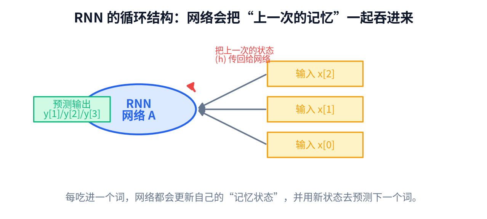
上图就是 RNN 的核心：一个"网络 A"每吃进一个输入，就更新自己的记忆，并输出一个结果；而这个记忆又会被"传回给自己"，参与下一次计算。把它按时间展开，就是下面这张更直观的图：
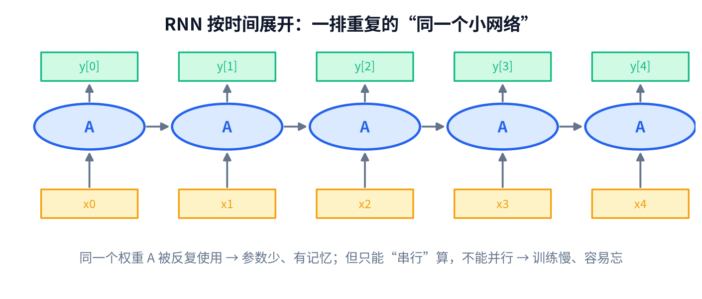
注意看：x0→x1→x2… 是连续输入的词，A 是同一个网络（同一套参数）被反复使用。这正是 RNN 的招牌优点：参数少、天然有记忆、内存占用固定——因为不管序列多长，它只需要保留一份"隐藏状态"。
但 RNN 有三个著名缺点：
所以 RNN 虽然"省"，但"笨且慢"，在大模型时代被 Transformer 取代了。
"隐藏状态（hidden state / state）"这个词非常重要，因为 RWKV 的整套设计都是围绕它展开的。请务必理解：
隐藏状态 = 模型对"到目前为止看到的一切"的压缩摘要，相当于模型的"心理状态 / 记忆"。
想象你在追一部剧：你不需要记住每一帧画面，大脑里留下的是一份"剧情摘要"——主角是谁、发生了哪些关键事件、现在进展到哪。这份摘要会随着剧情不断更新。隐藏状态就是这个"剧情摘要"。
RNN 每读一个词，就更新一次隐藏状态；RWKV 也完全一样。理解"隐藏状态"就理解了 RWKV 的一半，因为 RWKV 的核心创新，就是设计了一套"特别会做摘要、摘要又能并行生成"的隐藏状态更新规则。
2017 年，Google 发表《Attention Is All You Need》，提出 Transformer，彻底改变了 NLP 领域。它的核心是自注意力（Self-Attention）。
自注意力的直觉是：每个词在理解自己时，都要"看看"序列里所有其他词，并判断谁跟它关系大。 比如在"银行"这个词出现时，模型要判断上下文里的"存钱"还是"河岸"，来理解这里是"银行"还是"河岸"。
实现上，每个词会生成三个向量：
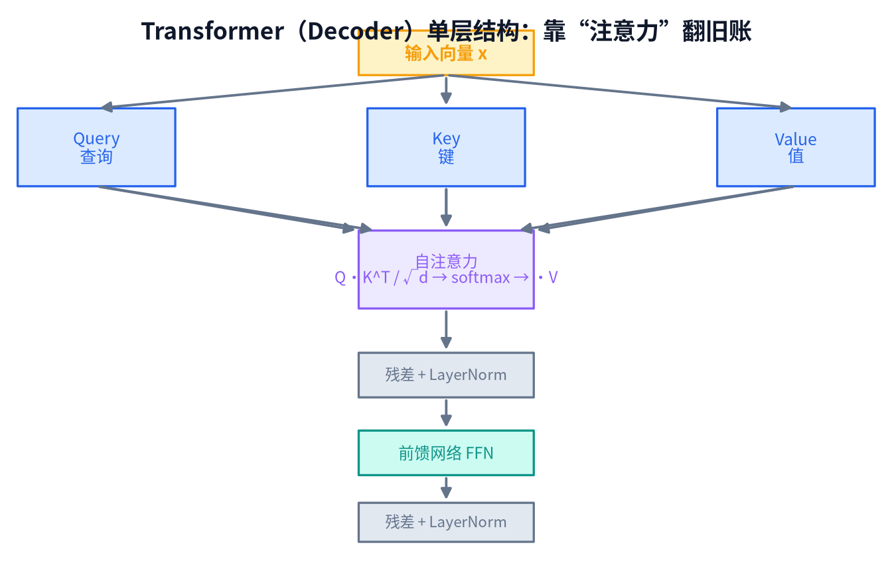
然后每个 Query 会跟所有词的 Key 算相似度（打分），分数经过 softmax 变成"注意力权重"，再用这些权重去加权求和所有 Value。谁跟当前词关系大，谁的 Value 就贡献得多。
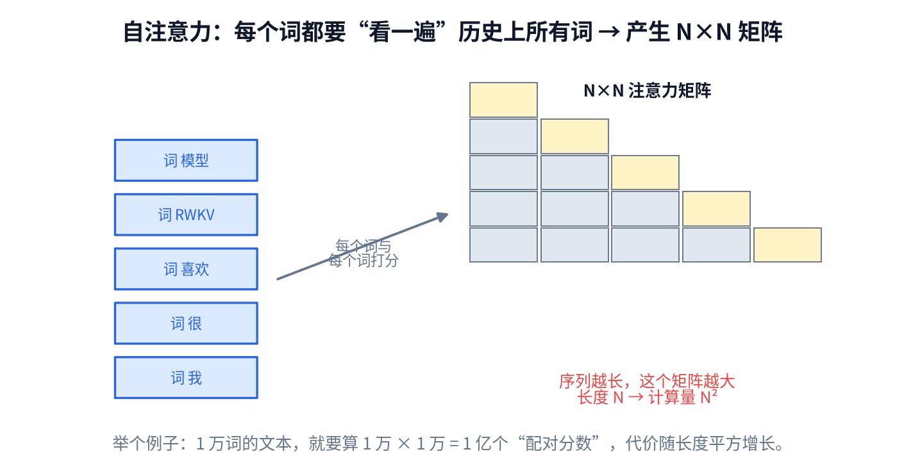
这样做的最大好处是：
正因如此，Transformer 成了 ChatGPT、Llama 等几乎所有现代大模型的基础，横扫 NLP。
Transformer 再强，也有一个绕不开的代价——复杂度随序列长度 N 呈平方级增长（O(N²)）。
这就是为什么"长文本"和"多轮长对话"对 Transformer 是噩梦：要么贵得离谱，要么内存爆掉。
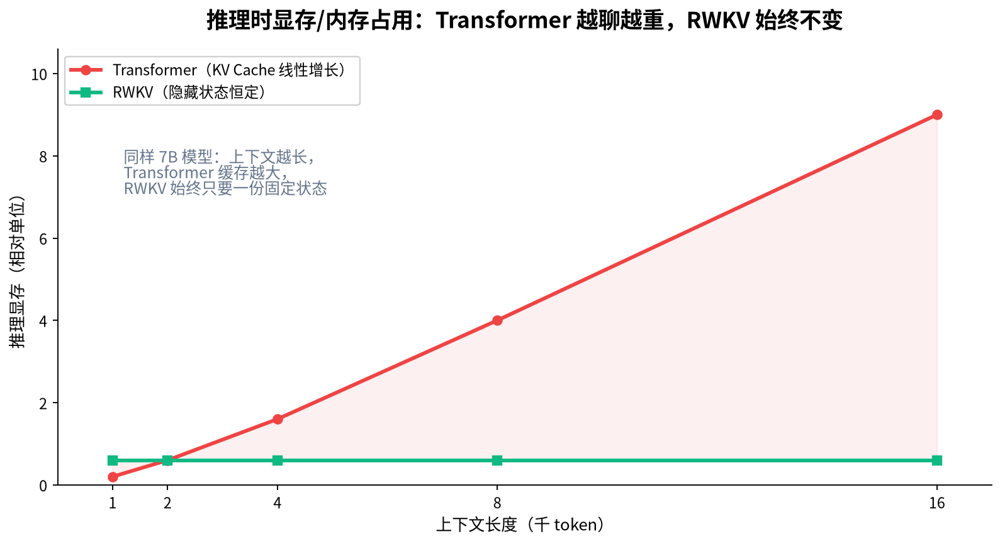
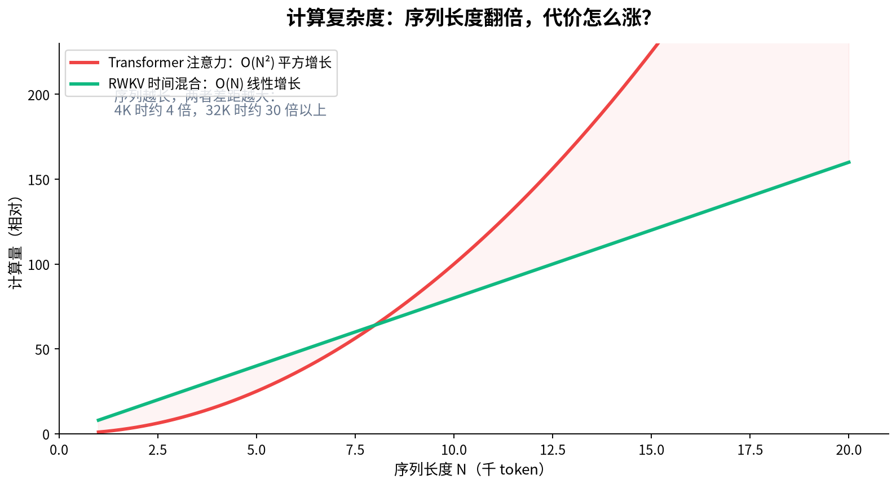
| 特性 | RNN（LSTM 等） | Transformer |
|---|---|---|
| 记忆机制 | 隐藏状态（固定大小） | 自注意力 + KV Cache |
| 训练并行 | 不能并行，串行慢 | 完全并行，训练快 |
| 推理内存 | 固定（O(1)） | 随上下文增长（KV Cache） |
| 长距离记忆 | 差（健忘/梯度消失） | 强（任意距离直接关联） |
| 计算复杂度 | O(N) 线性 | O(N²) 平方 |
| 记忆精确度 | 低（压缩摘要） | 高（完整保留原文） |
现在你应该看出来了：RNN 省但不强，Transformer 强但不省。 那能不能造一个"又强又省"的架构？这正是 RWKV 诞生的动机——它的所有设计，都是在回答这个问题。
有了 RNN 和 Transformer 的基础，现在我们可以正式认识 RWKV 了。这一章讲清楚它的名字、定义、出身和"家族归属"。
RWKV 这个名字不是随便取的，它来自架构中四个核心组件——而且这四个组件，恰好能帮你记住这个模型是怎么工作的：
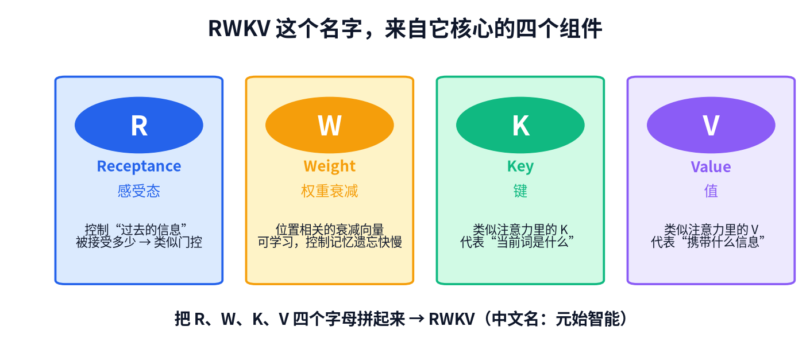
| 字母 | 英文 | 中文 | 通俗理解 | 类比传统注意力 |
|---|---|---|---|---|
| R | Receptance | 感受态 | 控制"过去的信息"要被接受多少，像一个开关/门控 | 类似 Q（查询） |
| W | Weight | 权重衰减 | 可训练的"遗忘系数"，决定记忆随时间衰减多快 | 相当于位置权重 |
| K | Key | 键 | 代表"当前这个词是什么"，用于检索记忆 | 同注意力里的 K |
| V | Value | 值 | 代表"这个词携带什么信息内容" | 同注意力里的 V |
一句话记法：RWKV 用"K 和 V"把信息写进记忆，用"W"决定忘得多快，用"R"决定读出来多少——四个字母正好串起"写入→衰减→读出"的完整流程。
顺带一提：RWKV 项目的中文名叫"元始智能"。它也是中国第一个达到 GPT 级性能的开源语言模型。
用一句话定义它：
拆开看三个关键词：
在大模型架构演化的版图上，RWKV 站在"高效序列模型"这一支里。理解这个定位，能帮你更好地看懂后面的对比：
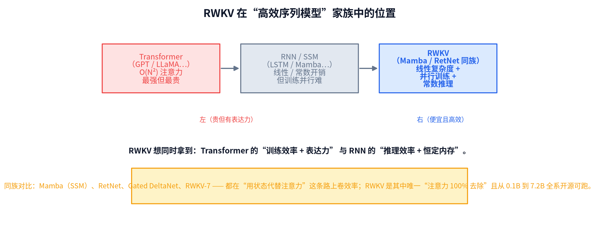
这一章我们把 RWKV"特殊在哪"讲透。这十条卖点，既是它吸引人的地方，也是和 Transformer 拉开差距的关键。建议逐条看，每条后面都配了"小白版解释"。
这是 RWKV 最根本、最反直觉的一条。Transformer 的灵魂是自注意力，而 RWKV 完全没有它，靠"时间混合（Time Mixing）+ 通道混合（Channel Mixing）"两个模块替代。
RWKV 的时间复杂度随序列长度 线性增长（O(N)），而 Transformer 是平方级（O(N²)）。
推理时 Transformer 要存"KV Cache"（历史每个词的键值），随对话增长线性膨胀；RWKV 只需一份固定大小的隐藏状态，无论上下文多长，内存占用不变。
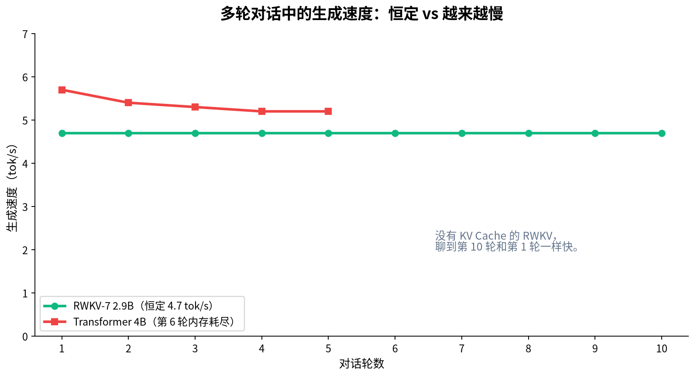
因为没有 KV Cache，RWKV 每个 token 的生成时间与上下文长度无关——聊到第 100 轮和第 1 轮一样快。Transformer 越聊越慢（因为每生成一个新词，都要重新处理越来越长的缓存）。
这是 RWKV 最巧妙的工程设计：同一套权重，有两种跑法。
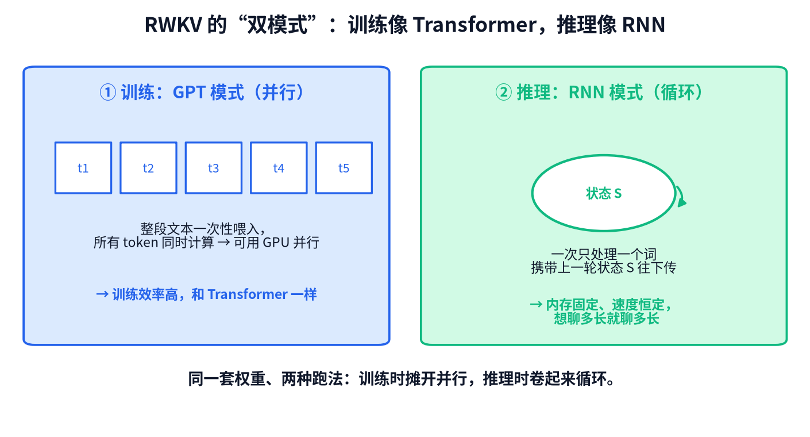
推理（RNN 模式 / 时间顺序）：一个词一个词地走，每步带上一步的状态 → 内存固定、延迟恒定。
小白版：一辆车两种开法——高速用"并行巡航"，堵车用"单车道慢行"，都省油。
理论上，因为内存固定、速度恒定，RWKV 可以处理非常长的上下文（社区常宣传"无限 ctxlen"），特别适合长文档和超长多轮对话。注意，这是"推理成本不随长度暴涨"，但模型对超长上下文的"实际记忆质量"仍有限制（这一点在第六章会详细讲）。
RWKV 的隐藏状态可以直接被微调！这叫 State Tuning（状态微调）：不动模型权重，只微调"隐藏状态"，就能让模型在特定任务上表现更好。
RWKV 推理时只做矩阵×向量运算，不需要 KV Cache，因此：
RWKV 模型、训练代码、推理内核均以 Apache 2.0 协议开源，属于 Linux 基金会项目。这意味着你可以自由使用、修改、商用，没有闭源模型的授权成本。对企业和个人项目都很友好。
RWKV 还能输出高质量的句子向量（句嵌入），可直接用于语义搜索、文本聚类、检索增强（RAG）等任务，相当于"语言模型 + 向量模型"二合一，省下一套嵌入模型的钱。
| # | 卖点 | 一句话 |
|---|---|---|
| 1 | 无自注意力 | 架构里 100% 没有 attention |
| 2 | 线性复杂度 | 计算量 O(N)，不随长度平方爆炸 |
| 3 | 恒定内存 | 无 KV Cache，状态固定 |
| 4 | 恒定速度 | 每个词生成耗时与长度无关 |
| 5 | 双模式 | 训练并行、推理循环，一套权重两用 |
| 6 | 长上下文 | 成本不随长度暴涨，适合超长文本 |
| 7 | State Tuning | 可微调隐藏状态，又快又省 |
| 8 | 硬件友好 | CPU 可跑、量化友好、显存低 |
| 9 | 开源可商用 | Apache 2.0，Linux 基金会项目 |
| 10 | 句嵌入 | 自带语义向量，可做检索 |
这一章我们钻进 RWKV 的内部，把它的"零件"一个个拆开看。别怕，我们会一直用"记忆"和"笔记"的比喻，公式只是顺便提一下。
RWKV 的整体骨架和 Transformer 很像：输入被切成 token → 向量化 → 经过 N 层相同的"块（block）"堆叠 → 输出预测。 每一层块都由两个子块组成：
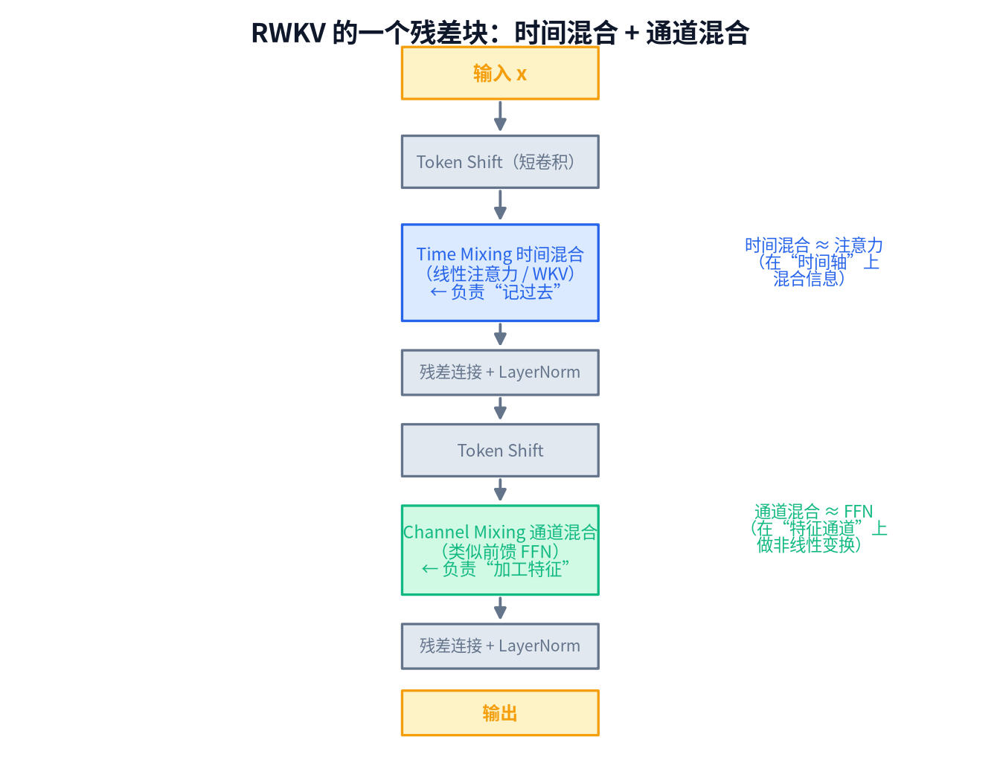
从上图可以看到，两个子块之间都有残差连接（Residual）+ LayerNorm，和 Transformer 的"残差 + 归一化"套路一致。残差连接的意义：让信息能"抄近路"绕过复杂模块，既帮助训练稳定，也让深层网络可训练。
这是 RWKV 的一个小但关键的技巧。在每个子块计算前，它会把"上一个时刻的输入"和"当前时刻的输入"按比例混合一下。
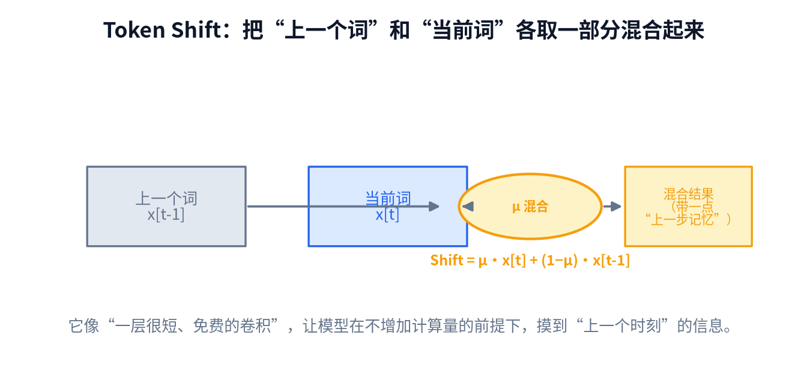
数学上就是线性插值：
Shift(x[t]) = μ · x[t] + (1 - μ) · x[t-1]
其中 μ 是混合系数（不同通道可以不同）。直观地说，它让每个位置"自带一点上一时刻的影子"，从而让模型在计算时能"摸到"邻近的历史信息。
这是 RWKV 最重要的发明，用"WKV 算子"替代了注意力。它的流程可以拆成三步：
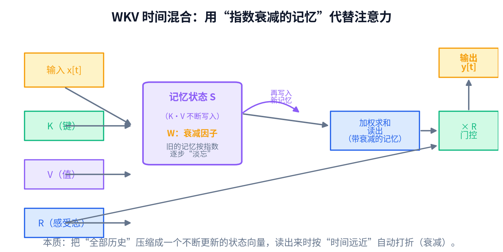
用公式表达（RWKV-4 的经典形式）：
WKV 核心：output_t = R_t · ( Σ_{i<t} exp(-w·(t-i)) · (K_i · V_i) + exp(u)·(K_t·V_t) ) / 分母
exp(-w·(t-i)) 就是按时间距离打折：离得越远，权重越小（但不会完全消失）。u 是"当前时刻的额外权重"（因为当前信息通常最重要）。为什么这样能代替注意力？ 注意力是"每个词和所有历史词两两打分"；而 WKV 把历史预先压缩进一个固定大小的状态 S，读的时候不再逐个比对，而是"一把抓出来再按新旧打折"。前者精确但贵，后者省但略微"糊"。
公式中的"分母"用于归一化，避免状态不断累加而爆炸。RWKV-4 用一个单独的状态保存归一化因子；RWKV-7 改进了归一化方式，这里不展开。
如果说 Time Mixing 管"时间"，那 Channel Mixing 就管"特征"。它在同一个时刻上，对词向量的各个维度（通道）做非线性加工，作用类似 Transformer 的前馈网络 FFN。
它同样用 R、K、V 结构，但"混合"发生在通道之间而非时间之间：
Channel Mixing：out = sigmoid(R) ⊙ ( W2 · gelu(W1 · K) ⊙ V )
gelu 做非线性变换；把上面的零件拼起来，你就明白 RWKV 的记忆逻辑了：
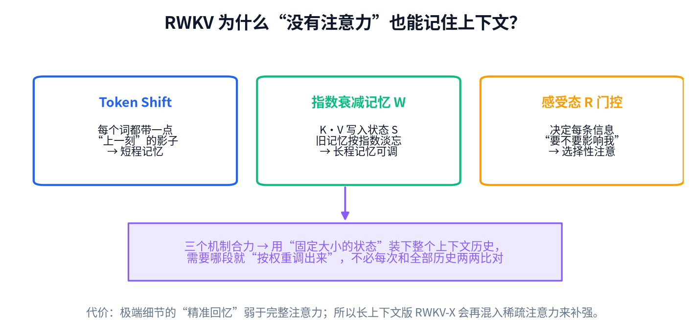
| 机制 | 角色 | 负责的记忆类型 |
|---|---|---|
| Token Shift | 短程记忆 | 刚看到的邻近词 |
| 指数衰减状态（WKV） | 长程记忆 | 整段历史的压缩摘要 |
| R 感受态门控 | 选择性注意 | 决定"要不要理会某条信息" |
三个机制合起来，用一份固定大小的状态装下整个上下文，需要哪段按权重调出来——这就是它没有注意力却"记得住"的原因。
为了方便学过 Transformer 的人理解，我们做一张"翻译表"：
| Transformer | RWKV 对应物 | 说明 |
|---|---|---|
| 自注意力（Self-Attention） | Time Mixing（WKV） | 都做"序列信息聚合" |
| Q/K/V | R（感受态）+ K + V | 角色类似，机制不同 |
| 位置编码（Positional） | W 衰减 + Token Shift | 用"时间衰减"隐含位置信息 |
| 前馈网络 FFN | Channel Mixing | 都做逐位置非线性变换 |
| 残差 + LayerNorm | 残差 + LayerNorm | 几乎一样 |
| KV Cache（推理） | 隐藏状态 S | 一个是"完整历史"，一个是"压缩摘要" |
核心差异浓缩成一句话：Transformer 靠"保存所有历史 + 两两比对"来记忆；RWKV 靠"压缩成一份状态 + 按新旧打折"来记忆。
为什么"同一套权重"既能并行训练又能循环推理？关键在 WKV 的可分解性：
S_t = f(S_{t-1}, x_t)，每步只依赖上一步 → 天然串行、固定内存。w 与输入无关（RWKV-4 及以前），整条时间轴上的 WKV 可以写成"前缀和"（cumulative sum），一次性并行算出所有位置的输出 → GPU 全开。RWKV-6/7 引入了"数据相关"的衰减和更复杂的更新，并行不再那么简单，官方用专门的 CUDA 内核（WKV kernel）来高效实现——这也是为什么用 RWKV 时通常建议开启官方内核加速（第九章会讲）。
这一章我们做一次"体检式"对比，把 RWKV 和 Transformer 从机制、复杂度、显存、训练、推理、效果、生态等各个维度掰开揉碎比较一遍。读完这一章，你对"什么时候选 RWKV、什么时候选 Transformer"会有一个清晰的判断。
先给你一个"总纲"，后面的所有细节都是它的展开：
Transformer：记忆靠"保存全部历史 + 两两比对"，精确但昂贵（O(N²)）。 RWKV：记忆靠"压缩成一份固定状态 + 按新旧打折"，便宜（O(N)）但略"糊"。
Transformer（自注意力）：
这个过程对"序列内任意两个词"都做了一遍配对，所以叫"全对全（all-to-all）"。它的好处是任意距离都能直接关联（远亲也能翻到），坏处是计算量和内存随 N 平方增长。
RWKV（WKV 线性注意力）：
它不需要两两配对，只维护一份状态，所以计算量是 O(N)、内存是 O(1)。
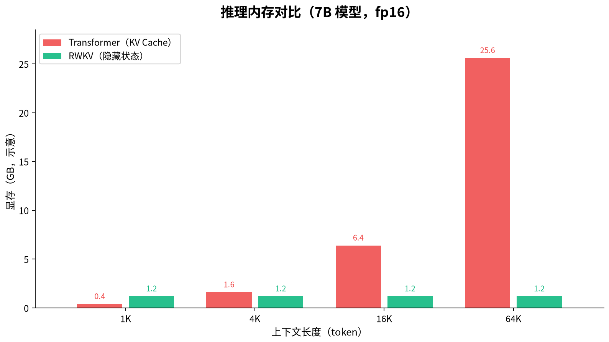
这是两者最本质的取舍：
| 维度 | Transformer | RWKV |
|---|---|---|
| 记忆载体 | 全部历史 token 的 K/V（KV Cache） | 固定大小的隐藏状态 S |
| 能否精确"翻旧账" | 能，任意位置的原文都能精确加权 | 不能，只保存压缩后的摘要 |
| 长文本信息密度 | 越高（原文都在） | 受状态容量限制 |
| 检索方式 | 逐个 token 两两打分 | 从状态中一次读出 + 衰减加权 |
| 类比 | 完整录音 / 完整账本 | 会议纪要 / 流水摘要 |
一个重要的事实：Transformer 的"精确回忆"在长上下文里是优势，但代价是"贵"。RWKV 用"摘要"换来了"便宜"，在大多数实际任务里，摘要已经够用；只有少数需要"逐字精确引用原文"的任务（比如某些法律文书检索），Transformer 仍占优。
自注意力要算一个 N×N 的注意力矩阵：N 个词，每个词要和 N 个词打分。所以：
长度翻倍，计算量变 4 倍（平方）；长度翻 4 倍，计算量变 16 倍。
RWKV 的 WKV 算子每来一个 token，只做一次"固定大小的状态更新 + 一次读出"，和"之前有多少词"无关。所以：
长度翻倍，计算量约翻倍（线性），这才是"长上下文不心疼"的根本原因。
| 上下文长度 | Transformer 相对成本 | RWKV 相对成本 | 差距 |
|---|---|---|---|
| 1K | 1 | 1 | 持平 |
| 4K | 16 | 4 | 约 4 倍 |
| 16K | 256 | 16 | 约 16 倍 |
| 64K | 4096 | 64 | 约 64 倍 |
| 256K | 65536 | 256 | 约 256 倍 |
注意：这是"注意力部分"的理论复杂度对比，实际推理中 Transformer 有 FlashAttention 等优化、RWKV 有专用 CUDA 内核，比例会有所变化，但"随长度增长的趋势"不变——长度越长，RWKV 的性价比优势越大。
Transformer 推理时，为避免重复计算历史，会把每个已处理 token 的 K、V 向量缓存下来，这就是 KV Cache。它的大小随序列长度线性增长：上下文 4K 的 7B 模型，KV Cache 可能占数 GB 显存；64K 时就非常可观。
RWKV 推理时只保留一份固定大小的隐藏状态 S（比如 7B 模型约 1-2GB，且与上下文长度无关）。无论你聊 100 句还是 10000 句，内存占用不变。
| 项目 | Transformer | RWKV |
|---|---|---|
| 每轮新增内存 | 新增每个 token 的 K/V | 无（状态原地更新） |
| 长对话表现 | 越聊越慢，可能内存耗尽 | 速度、内存恒定 |
| 单次生成延迟 | 随上下文增长 | 恒定 |
| 极端长上下文 | 容易 OOM 崩溃 | 稳定可续 |
对"多轮长对话"这类场景，差别是能不能用的区别：RWKV 聊到第 100 轮和第 1 轮一样快；Transformer 则在某轮开始后逐轮变慢，最终显存耗尽报错。这也是我们后续要把它套用到"AI 陪伴 / 情感智能体"上的核心原因之一。
自注意力对序列内所有 token 同时计算，训练时 GPU 可以"全开"，所以训练效率极高。这是它统治大模型时代的核心竞争力。
RWKV 的巧妙之处在于"同一套权重，两种跑法"：
因为 RWKV 不需要保存"每个 token 的 K/V 用于反向传播"（Transformer 训练时要保存大量中间激活），RWKV 的训练显存通常明显低于同规模 Transformer，这让单卡微调变得可行。
| 训练维度 | Transformer | RWKV |
|---|---|---|
| 序列并行 | 支持 | 支持（GPT 模式） |
| 反向传播中间量 | 大（每层每 token） | 相对小（状态式） |
| 单卡微调友好度 | 一般（常用 LoRA） | 好（显存更低） |
| 长序列训练 | 昂贵 | 更省 |
"谁更强"不能脱离场景和规模。客观地看：
| 你的诉求 | 推荐 |
|---|---|
| 要最先进效果、算力充足、不在乎成本 | Transformer |
| 长对话、低显存、边缘部署、成本敏感 | RWKV |
| 要私有化、离线、可控 | RWKV（更省） |
| 要丰富生态、成熟工具链 | Transformer |
| 低成本做个性化微调 | RWKV（显存低 + State Tuning） |
| 维度 | Transformer | RWKV |
|---|---|---|
| 模型数量 | 极多（Llama/Qwen/DeepSeek…） | 较少但全系开源（0.1B–7.2B） |
| 推理框架 | 极多（vLLM/TGI/llama.cpp/Ollama…） | 已支持 Ollama/llama.cpp/vLLM/Runner 等 |
| 训练框架 | 成熟 | RWKV-LM / RWKV-PEFT |
| 微调手段 | LoRA/QLoRA/全参 | LoRA/全参 + 独有的 State Tuning |
| 文档社区 | 海量 | 官方 wiki + 中文社区（rwkv.cn） |
| 许可 | 各异 | Apache 2.0（Linux 基金会项目） |
| 对比维度 | Transformer | RWKV |
|---|---|---|
| 核心机制 | 自注意力 | WKV 线性注意力 + Token Shift |
| 记忆方式 | KV Cache（完整历史） | 固定隐藏状态（压缩摘要） |
| 时间复杂度 | O(N²) | O(N) |
| 推理内存 | 随上下文增长 | 恒定 |
| 推理延迟 | 随上下文增长 | 恒定 |
| 训练并行 | 支持 | 支持（GPT 模式） |
| 位置编码 | 显式（RoPE 等） | 隐式（W 衰减 + Token Shift） |
| 精确回忆 | 强 | 弱（受状态容量限制） |
| 长上下文成本 | 高 | 低 |
| 硬件门槛 | 高（显存大） | 低（CPU/边缘可跑） |
| 独家能力 | — | State Tuning（微调隐藏状态） |
| 开源许可 | 各异 | Apache 2.0 |
| 表达力上限 | 强（大模型时代主流） | 正在逼近（RWKV-7 已超 TC0） |
| 生态成熟度 | 极成熟 | 快速成长 |
这一章回答两个问题：RWKV 是怎么一步步进化到今天这个样子的？ 以及为什么一套"没有注意力"的循环网络，能取得接近 Transformer 的效果？ 理解这两点，你就真正"懂"了 RWKV。
RWKV 从 2021 年到现在经历了 8 个主要版本，每个版本都在解决上一代的核心瓶颈：
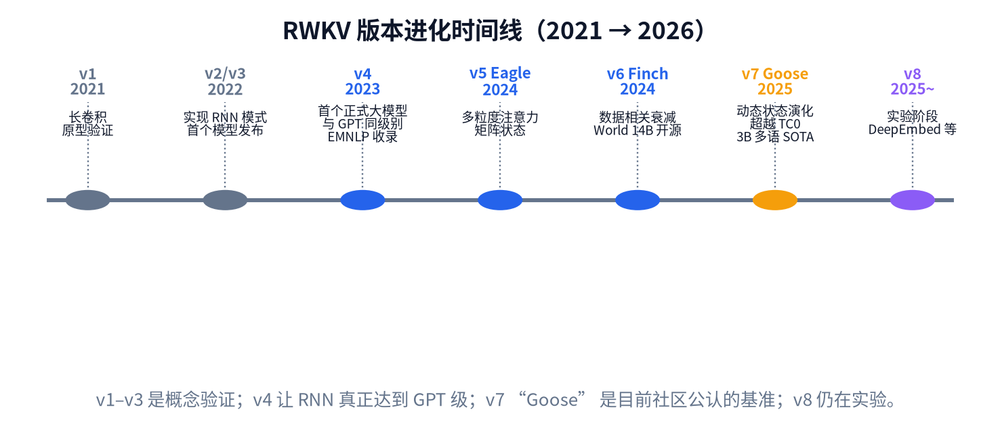
| 版本 | 代号/年份 | 核心突破 | 一句话说明 |
|---|---|---|---|
| v1 | 2021 | 长卷积替代注意力 | 首次提出 Time-mix + Channel-mix 结构，验证方向 |
| v2/v3 | 2022 | 实现 RNN 推理模式 | 让模型真正以"循环"方式工作，发布首个可用模型 |
| v4 | 2023 | 首个 GPT 级大模型 | 性能达到 GPT 同级别，论文被 EMNLP 2023 收录 |
| v5 | Eagle，2024 | 多粒度注意力、矩阵状态 | 把状态从"向量"升级为"矩阵"，表达能力更强 |
| v6 | Finch，2024 | 数据相关衰减、World 14B | 引入动态衰减与更多语言覆盖，开源 14B 多语言模型 |
| v7 | Goose，2025 | 动态状态演化（DSE） | 突破线性注意力表达力上限，3B 多语 SOTA |
| v8 | 实验阶段，2025~ | DeepEmbed / ROSA 等 | 探索稀疏化、混合架构（RWKV-7s）、在线后缀自动机 |
这一时期的意义：证明了"去掉注意力 + 用状态记忆"这条路能走通，且参数量可以很小（如 27M）也能有不错的效果。
RWKV-4 是整个项目最重要的里程碑：
它的意义：证明了"无注意力架构"不只是玩具，而是能真正达到大模型水平的产品级方案。
RWKV-5 引入多粒度注意力，把状态从"向量"升级为"矩阵"：
RWKV-6 的关键词是"动态"：
它的意义：RWKV 从"通用高效架构"走向"多语言、多任务的世界模型"，应用面大幅扩展。
RWKV-7 是目前社区公认的基准，论文于 2025 年 3 月公开，官方称其为 RWKV-7 "Goose"。它解决了线性注意力长期以来的"表达力天花板"问题。
在 v4–v6 里，状态更新是"写进去就固定"：
S[t] = 衰减 · S[t-1] + K · V
问题在于：记忆只能"写进去"，不能"改错"。如果模型一开始记错了某条信息，后面无法修正，这会限制它在某些推理任务上的表现。
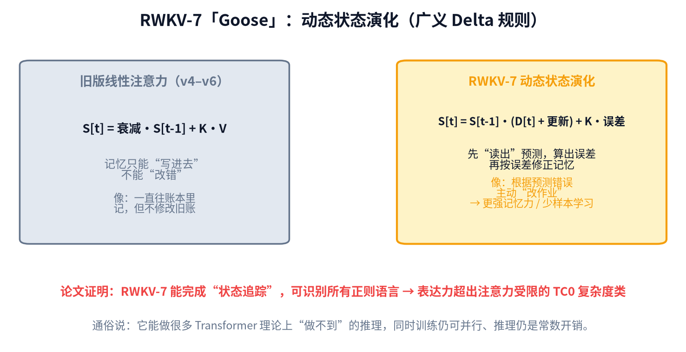
RWKV-7 的核心创新是 Dynamic State Evolution（动态状态演化），本质是广义 Delta 规则（generalized delta rule）：
S[t] = S[t-1] · D[t] + 基于“误差”的更新
直觉是：模型每一步会先从状态里"读出"一个预测，然后拿真实输入和预测对比，算出误差，再用误差修正记忆——就像学生做完题对答案，发现错了就"改作业"。这样一来：
截至 2026 年，RWKV-8 仍处于实验阶段，公开的方向包括：
趋势判断：RWKV 正在走"纯 RNN → 动态状态 → 混合/稀疏化"的路线，未来大概率会是"状态记忆为主 + 必要处稀疏注意力"的混合形态。
很多人的第一反应是：没有注意力，怎么捕捉词与词的关系？答案藏在三件事的合力里。
| 机制 | 负责的记忆类型 | 通俗类比 |
|---|---|---|
| Token Shift | 短程记忆（邻近词） | 动笔前瞥一眼上一句 |
| 指数衰减状态（WKV） | 长程记忆（整段历史） | 一直更新的读书笔记 |
| R 感受态门控 | 选择性注意 | 决定"这条要不要影响我" |
传统 RNN（如 LSTM）的"健忘"源于梯度在时间轴上连乘导致梯度消失。RWKV 用"指数衰减 + 显式可学习的 W"直接控制了信息在时间上的保留程度，而不是靠训练中去隐式学习——这让长程信息有保障地被保留，且 Token Shift 保证邻近信息不丢。
关键在于衰减结构可以写成"前缀和"：
RWKV 的价值不在于"替代所有模型"，而在于它证明了：
"聪明 + 便宜 + 省内存"可以同时存在。 它把 RNN 的省、Transformer 的强，用一套优雅的"状态记忆"设计统一了起来，并持续在表达力上逼近甚至超越注意力受限的模型。
从这一章开始进入"实战"。我们会先给你一张"部署选型地图"，再手把手教你装好环境，为后面的命令行、API、Python 调用铺路。目标是：让一个完全没部署过模型的小白，也能把 RWKV 跑起来。
RWKV 目前有非常多种跑法，适合不同的人。先看这张流程图，选一个适合自己的入口：
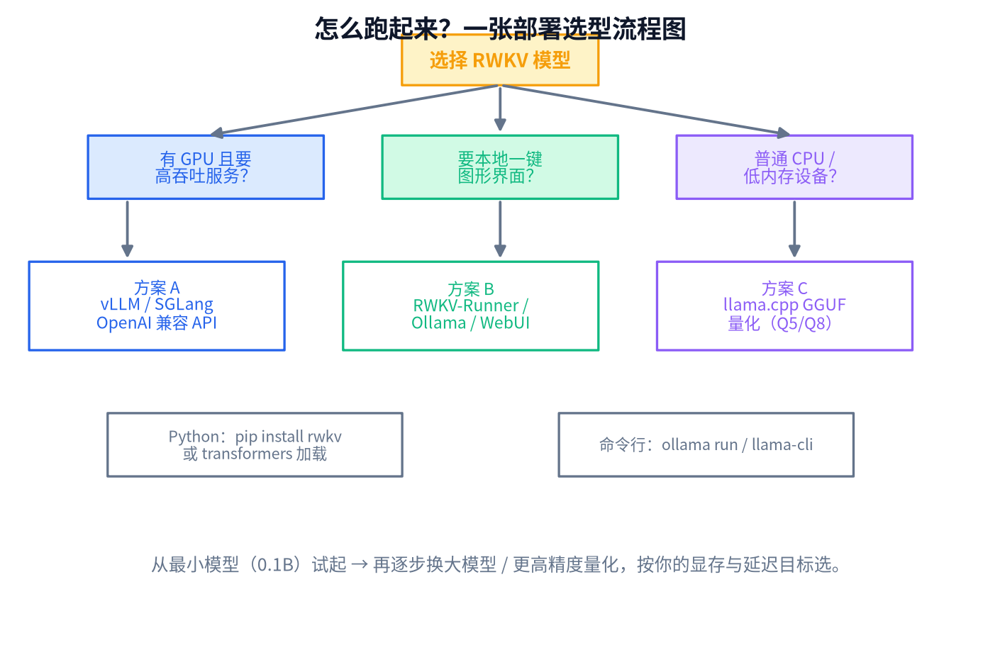
| 入口 | 适合谁 | 难度 | 特点 |
|---|---|---|---|
| Ollama | 新手、想最快跑起来 | ★☆☆ | 一条命令下载+运行，自动提供 OpenAI 兼容 API |
| RWKV-Runner | 想要图形界面、可调参数 | ★☆☆ | 桌面 GUI，一键加载 .pth，支持挂载 State |
| llama.cpp（GGUF） | 低配设备、CPU 用户 | ★★☆ | 量化模型，内存极省，命令行/服务两种模式 |
| HuggingFace + Python | 开发者、要自定义逻辑 | ★★★ | 直接用 transformers / rwkv 库加载，最灵活 |
| vLLM / SGLang | 生产环境、高并发服务 | ★★★ | OpenAI 兼容服务，吞吐高 |
| RWKV Pip / Albatross | 研究、想用官方内核 | ★★★ | 官方 .pth 直接推理，支持 State 读写 |
新手建议：先从 Ollama 或 RWKV-Runner 入手，1 分钟跑起来有感觉了，再去看 Python 或服务化方案。
RWKV 全系开源，规模从 0.1B 到 7.2B 都有。选多大取决于你的硬件：
| 模型规模 | 参数量 | 量化为 Q8 后大小 | 适合硬件 |
|---|---|---|---|
| RWKV-7 1.5B | 15 亿 | 约 1.6GB | 4GB 内存/显存即可 |
| RWKV-7 2.9B | 29 亿 | 约 3GB | 8GB 内存/显存 |
| RWKV-6 7B | 70 亿 | 约 7GB | 12GB+ 内存/显存 |
| RWKV-6 14B | 140 亿 | 约 14GB | 24GB+ 显存（多语最强） |
选型口诀：先选一个"跑得动的最小模型"验证流程，再逐步升级。CPU 用户优先考虑 1.5B / 2.9B 的 GGUF 量化版；有 NVIDIA GPU 再上更大规模。
curl -fsSL https://ollama.com/install.sh | sh
安装完成后，在终端输入 ollama --version 能输出版本号即成功。
RWKV 社区成员 @MollySophia 维护了官方的 RWKV-7 模型库。直接运行：
# 运行 RWKV-7 G1 2.9B（推荐，默认带思考模式）
ollama run mollysama/rwkv-7-g1:2.9b
Ollama 会自动下载模型并进入对话界面，像和 ChatGPT 聊天一样直接打字。常见参数：
| 模型 tag | 说明 |
|---|---|
mollysama/rwkv-7-g1:2.9b |
2.9B，Q8_0 量化，默认带思考模式 |
mollysama/rwkv-7-g1:1.5b |
1.5B，更轻量 |
mollysama/rwkv-7-g1:2.9b-thinkdisabled |
关闭思考模式（更快） |
mollysama/rwkv-7-world:2.9b |
老版 World 模型（不推荐，G1 更全面） |
提示：默认思考模式下，可以用
/set nothink和/set think在终端里随时切换思考模式开关。
Ollama 默认在 http://localhost:11434 提供 API，几乎和 OpenAI 接口一致，方便程序调用：
curl http://localhost:11434/api/chat -d '{
"model": "mollysama/rwkv-7-g1:2.9b",
"messages": [{"role": "user", "content": "用一句话介绍 RWKV"}],
"stream": false
}'
如果你更习惯"点鼠标"，用 RWKV-Runner（rwkv.cn 提供）体验最好：
cuda fp16 或 cpu fp32）；
- NVIDIA 显卡 + RWKV-7 可切换 Albatross（albatross workers=1 batch=32）做性能对比；
- GGUF 量化模型用 llama.cpp 后端；
- 苹果/AMD 等 WebGPU 设备用 WebGPU 后端；后端小知识：后端（Backend）决定"哪套程序加载并运行模型"；Strategy 是"加载配置"（设备、精度、上下文长度）；量化是"权重的保存精度"。三者不要混淆。
llama.cpp 是 CPU 也能高效跑模型的老牌工具，RWKV 的 GGUF 量化模型对它支持良好。
RWKV 的 GGUF 模型可以从 Hugging Face 集合（如 zhiyuan8/models）下载，推荐用 FP16 或 Q8_0 量化档（更低的 Q5/Q4 会明显降低回复质量）。
# llama-cli 交互式对话
./llama-cli -m path/to/model.Q8_0.gguf -p "你好"
# 或启动一个 OpenAI 兼容的服务（llama-server）
./llama-server -m path/to/model.Q8_0.gguf --port 8080 --ctx-size 8192
启动服务后，可用 http://localhost:8080/v1/chat/completions 调用，和 OpenAI 格式一致。
要用代码做自定义逻辑（对话机器人、RAG、State 保存等），直接在 Python 里加载最灵活。
pip install rwkv rwkv_tokenizer
# 或（用 transformers 生态时）
pip install transformers huggingface_hub
huggingface-cli download BlinkDL/rwkv7-g1 \
rwkv7-g1b-1.5b-20251202-ctx8192.pth \
--local-dir /path/to/models
或用 Python：
from huggingface_hub import hf_hub_download
model_path = hf_hub_download(
repo_id="BlinkDL/rwkv7-g1",
filename="rwkv7-g1b-1.5b-20251202-ctx8192.pth",
local_dir="/path/to/models",
)
国内网络慢的话，可以设置镜像：
export HF_ENDPOINT=https://hf-mirror.com。
要在生产环境提供服务、支撑高并发，用 vLLM（官方支持 RWKV）：
pip install vllm
python -m vllm.entrypoints.openai.api_server \
--model BlinkDL/rwkv7-g1 \
--host 0.0.0.0 --port 8000 \
--max-model-len 8192 \
--gpu-memory-utilization 0.85
启动后即获得 OpenAI 兼容的 /v1/chat/completions 接口，吞吐量高、适合多用户场景。
无论你选哪条路，先确认环境是好的：
# 1. Python 版本（建议 3.10+）
python3 --version
# 2. 显卡（有 NVIDIA GPU 才需要）
nvidia-smi
# 3. pip 本身
pip install --upgrade pip setuptools wheel
# 4. 磁盘空间（模型通常 2~15GB）
df -h
| 硬件情况 | 推荐方案 | 预期体验 |
|---|---|---|
| 无 GPU，仅 CPU | llama.cpp GGUF / Ollama CPU | 1.5B 约 5-10 tok/s，够聊天 |
| 8GB 内存的迷你主机 | Ollama 2.9B 量化 | 稳定 4-5 tok/s，长对话不崩 |
| NVIDIA 8GB 显存 | RWKV Pip / Albatross fp16i8 | 2.9B 流畅，可上 7B 量化 |
| NVIDIA 24GB+ 显存 | vLLM / Albatross | 7B/14B 高吞吐服务 |
这一章我们把"怎么用"讲透：从一次推理的内部流程，到命令行交互、API 调用、以及那些"温度、Top_P"到底怎么调。读完这一章，你能熟练地让 RWKV 干各种活。
无论是命令行还是 API，一次推理都要走下面这条流水线：
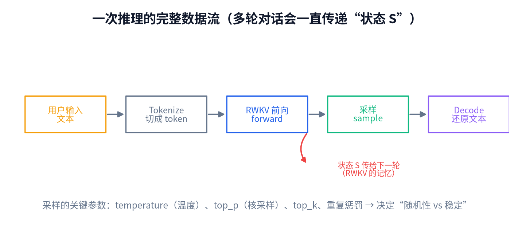
RWKV 的关键细节：多轮对话时，"状态 S"会一直往下传——所以它不需要每次都重新处理整段历史，这也是它"聊得再久也不慢"的秘密。
ollama run mollysama/rwkv-7-g1:2.9b
进入后直接输入即可。常用终端命令：
| 命令 | 作用 |
|---|---|
/set temperature 0.8 |
调整温度 |
/set num_ctx 8192 |
设置上下文长度 |
/set think / /set nothink |
打开/关闭思考模式 |
/bye |
退出 |
想让 RWKV 扮演特定角色（比如"温柔的心理咨询师"），写一个 Modelfile：
FROM mollysama/rwkv-7-g1:2.9b
PARAMETER temperature 0.7
PARAMETER top_p 0.9
PARAMETER num_ctx 8192
SYSTEM """
你是一位温柔耐心的心理咨询师，名叫小暖。
你擅长倾听，用简短温暖的话语回应来访者。
永远不要说教，先共情，再给建议。
"""
然后创建并运行：
ollama create my-therapist -f Modelfile
ollama run my-therapist
这就是后面"套用到我们自己的 AI 陪伴工程"最直接的一步（见第十二章）。
curl http://localhost:11434/api/chat -d '{
"model": "mollysama/rwkv-7-g1:2.9b",
"messages": [
{"role": "system", "content": "你是友好的中文助手"},
{"role": "user", "content": "什么是 RWKV？"}
],
"stream": false,
"options": {"temperature": 0.7, "top_p": 0.9}
}'
因为接口是 OpenAI 兼容的，所以直接用 openai 库即可：
from openai import OpenAI
client = OpenAI(
base_url="http://localhost:11434/v1",
api_key="ollama", # 本地服务不校验 key
)
resp = client.chat.completions.create(
model="mollysama/rwkv-7-g1:2.9b",
messages=[
{"role": "system", "content": "你是一个温柔的心理陪伴助手。"},
{"role": "user", "content": "我今天好累，工作太多了……"},
],
temperature=0.8,
max_tokens=300,
)
print(resp.choices[0].message.content)
大段回答时，用流式输出体验更好（一个字一个字往外蹦）：
stream = client.chat.completions.create(
model="mollysama/rwkv-7-g1:2.9b",
messages=[{"role": "user", "content": "讲个睡前故事"}],
stream=True,
)
for chunk in stream:
delta = chunk.choices[0].delta.content
if delta:
print(delta, end="", flush=True)
这些参数决定生成的"随机性 vs 稳定"，非常重要：
| 参数 | 作用 | 建议 |
|---|---|---|
temperature |
温度：越高越随机、越有创意；越低越确定 | 0.6–0.9 创作；0.1–0.3 事实/代码 |
top_p |
核采样：只从累计概率前 P 的 token 里选 | 0.8–0.95 常用 |
top_k |
只从概率最高的 K 个 token 里选 | 40–80 常用 |
repeat_penalty |
重复惩罚：抑制说车轱辘话 | 1.0–1.3 |
max_tokens |
单次最多生成多少个 token | 按需求设置 |
num_ctx |
上下文窗口长度 | RWKV 可放心开大 |
调参口诀：
temperature 调低（0.2–0.4）；temperature 调高（0.7–1.0）；repeat_penalty 或适当降 temperature。RWKV 的长上下文优势，在"让模型读长文档"时体现得最明显。
long_text = open("一本小说.txt", encoding="utf-8").read() # 比如 3 万字
resp = client.chat.completions.create(
model="mollysama/rwkv-7-g1:2.9b",
messages=[
{"role": "system", "content": "你是一个文学分析助手。"},
{"role": "user", "content": f"请阅读以下文本并概括主线剧情：\n\n{long_text}"},
],
max_tokens=1000,
)
print(resp.choices[0].message.content)
对 Transformer 来说，3 万字可能已经让 KV Cache 爆掉；RWKV 因为状态固定，可以轻松处理。这也是后面 RAG（第十二章）的基础。
高并发场景下，用 vLLM 把 RWKV 包装成标准 OpenAI 服务：
python -m vllm.entrypoints.openai.api_server \
--model BlinkDL/rwkv7-g1 \
--port 8000 \
--max-model-len 8192 \
--gpu-memory-utilization 0.85
from openai import OpenAI
client = OpenAI(base_url="http://localhost:8000/v1", api_key="none")
resp = client.chat.completions.create(
model="BlinkDL/rwkv7-g1",
messages=[{"role": "user", "content": "你好"}],
)
| 问题 | 原因 | 解决 |
|---|---|---|
| 输出乱码/全是特殊字符 | 模型文件与 tokenizer 不匹配 | 确认用了配套的 tokenizer |
| 回复质量低 | 量化档太低（Q4 以下） | 换 Q8_0 / FP16 |
| 速度太慢 | CPU 推理 + 模型太大 | 换更小模型 / GGUF 量化 |
| 上下文太短 | num_ctx 没设大 |
调大上下文长度 |
| 多轮对话"失忆" | 每次请求没带状态 | 用流式/状态保存方案（第十章） |
这一章我们用真实可运行的 Python 代码，带你实现一个完整的 RWKV 应用：加载模型 → 对话 → 流式输出 → 状态保存/恢复（这是 RWKV 独有的杀手锏）。代码尽量简单，注释齐全，跟着敲一遍就能跑。
# 核心依赖
pip install rwkv rwkv_tokenizer torch
# 若用 HuggingFace 生态
pip install transformers huggingface_hub
提示：
rwkv库是官方推理库，支持 .pth 直接加载、State 读写；transformers适合想用统一接口的人。下面以官方rwkv库为主。
from rwkv.model import RWKV
from rwkv.utils import PIPELINE, PIPELINE_ARGS
import torch
# 1. 指定模型文件（.pth）与策略
model_path = "models/rwkv7-g1-2.9b-20250519-ctx4096.pth"
strategy = "cuda fp16" # 有 NVIDIA 显卡用这个
# strategy = "cpu fp32" # 纯 CPU 用这个
model = RWKV(model=model_path, strategy=strategy)
pipeline = PIPELINE(model, "rwkv_vocab_v304") # 配套 tokenizer
# 2. 生成参数
args = PIPELINE_ARGS(
temperature=0.8,
top_p=0.9,
top_k=80,
repetition_penalty=1.1,
max_gen=200, # 最多生成 200 个 token
)
# 3. 生成一段文本
print(pipeline.generate("请用一句话介绍 RWKV：", token_count=200, args=args))
RWKV 最大的魅力在于：状态 S 可以在多轮之间传递。这样模型不是靠"把所有历史再喂一遍"，而是带着压缩后的记忆继续聊。
from rwkv.model import RWKV
from rwkv.utils import PIPELINE, PIPELINE_ARGS
model = RWKV(model="models/rwkv7-g1-2.9b.pth", strategy="cuda fp16")
pipeline = PIPELINE(model, "rwkv_vocab_v304")
state = None # 状态从空开始
def chat(user_msg, state):
# 组装提示：system + 当前用户消息
prompt = f"你是一个温柔的心理陪伴助手。\n\n用户：{user_msg}\n助手："
args = PIPELINE_ARGS(temperature=0.85, top_p=0.95, max_gen=150,
repetition_penalty=1.1)
# generate 会返回 (文本, 更新后的 state)
text, state = pipeline.generate(prompt, token_count=150, args=args,
state=state)
return text.strip(), state
# 第一轮
reply1, state = chat("我今天加班到很晚，好累……", state)
print("助手：", reply1)
# 第二轮：模型还记得上一轮的情绪
reply2, state = chat("能不能给我讲个放松的小故事？", state)
print("助手：", reply2)
为什么这是"记忆"而不是"复读"？ 因为 state 是压缩后的摘要，不是把原文再抄一遍。这既省内存，又让"越聊越懂你"成为可能。
RWKV 的状态可以序列化保存到硬盘，下次启动时直接恢复——相当于"模型记得你是谁、你们聊过什么"。
import pickle
def save_state(state, path="my_chat_state.pkl"):
# state 通常是 list/tuple 结构，pickle 即可
with open(path, "wb") as f:
pickle.dump(state, f)
print(f"状态已保存到 {path}")
def load_state(path="my_chat_state.pkl"):
with open(path, "rb") as f:
return pickle.load(f)
完整的多会话流程：
# 场景：AI 陪伴机器人，每个用户有专属记忆
def get_state_for(user_id):
try:
return load_state(f"state_{user_id}.pkl")
except FileNotFoundError:
return None # 新用户，从空白记忆开始
def on_user_message(user_id, msg):
state = get_state_for(user_id) # 取出该用户的记忆
reply, new_state = chat(msg, state) # 带着记忆对话
save_state(new_state, f"state_{user_id}.pkl") # 存回记忆
return reply
这一步就是"角色记忆可持续"的工程实现——Transformer 要实现类似效果，要么把历史全喂进去（越来越贵），要么自己做一套记忆系统；RWKV 直接给你原生状态，天然适合"陪伴/长期关系"类产品。
def chat_stream(user_msg, state):
prompt = f"用户：{user_msg}\n助手："
args = PIPELINE_ARGS(temperature=0.85, top_p=0.95,
max_gen=150, repetition_penalty=1.1)
out = ""
for chunk in pipeline.generate(prompt, token_count=150, args=args,
state=state, stream=True):
# 每次只返回新增的几个 token
print(chunk, end="", flush=True)
out += chunk
print()
return out
流式输出的价值：长回答时用户不需要干等，体验和 ChatGPT 一样"一个字一个字蹦出来"。
把上面的拼起来，写一个最小可用的完整脚本：
"""rwkv_chatbot.py —— 一个带长期记忆的最小陪伴机器人"""
import pickle
from rwkv.model import RWKV
from rwkv.utils import PIPELINE, PIPELINE_ARGS
MODEL_PATH = "models/rwkv7-g1-2.9b-20250519-ctx4096.pth"
STRATEGY = "cuda fp16"
model = RWKV(model=MODEL_PATH, strategy=STRATEGY)
pipeline = PIPELINE(model, "rwkv_vocab_v304")
SYSTEM = "你是小暖，一个温柔耐心、善于倾听的心理陪伴助手。"
def make_state(user_id):
try:
with open(f"state_{user_id}.pkl", "rb") as f:
return pickle.load(f)
except FileNotFoundError:
return None
def keep_state(user_id, state):
with open(f"state_{user_id}.pkl", "wb") as f:
pickle.dump(state, f)
def respond(user_id, user_msg):
state = make_state(user_id)
prompt = f"{SYSTEM}\n\n用户：{user_msg}\n小暖："
args = PIPELINE_ARGS(temperature=0.85, top_p=0.95,
max_gen=200, repetition_penalty=1.1)
reply, state = pipeline.generate(prompt, token_count=200,
args=args, state=state)
keep_state(user_id, state)
return reply.strip()
if __name__ == "__main__":
uid = "alice"
while True:
msg = input("你：")
if msg in ("exit", "quit"):
break
print("小暖：", respond(uid, msg))
这个 40 行的脚本，已经实现了：
如果你更习惯 transformers，RWKV 也有对应的集成：
from transformers import AutoModelForCausalLM, AutoTokenizer
import torch
model_name = "BlinkDL/rwkv-7-3b" # 以实际 repo 为准
tokenizer = AutoTokenizer.from_pretrained(model_name)
model = AutoModelForCausalLM.from_pretrained(model_name).half().cuda().eval()
inputs = tokenizer("你好，介绍一下自己：", return_tensors="pt").to("cuda")
out = model.generate(**inputs, max_new_tokens=100, do_sample=True,
temperature=0.8, top_p=0.9)
print(tokenizer.decode(out[0], skip_special_tokens=True))
| 观测点 | 方法 |
|---|---|
| 显存占用 | nvidia-smi，观察是否恒定 |
| 生成速度 | 记录生成 token 数 / 耗时 |
| 多轮是否变慢 | 对比第 1 轮与第 20 轮速度 |
| 状态大小 | 打印 sys.getsizeof / 查看 .pkl 文件大小 |
RWKV 的特点：只要模型不变，状态大小不变，显存不变，速度不变——你可以亲手验证这一点，这也是它最惊艳的地方。
想让 RWKV"更懂你的业务"，主要有三条路：微调（Fine-tuning）、State Tuning（状态微调，RWKV 独有） 和 RAG（检索增强）。这一章把三者讲清楚，并给出实践建议。
| 手段 | 改的是什么 | 成本 | 效果 |
|---|---|---|---|
| 提示工程（Prompt） | 不改模型，改输入 | 最低 | 一般，受上下文限制 |
| RAG（检索增强） | 不改模型，动态塞入资料 | 低 | 好，适合"查资料回答问题" |
| 微调（Fine-tuning） | 改模型权重 | 高（需 GPU） | 强，改变模型"能力/性格" |
| State Tuning | 只改隐藏状态 | 低（更快更省） | 强，像"调整心理状态"，个性化/对齐效果好 |
一句话：RAG 是"外挂知识"，微调是"改造大脑"，State Tuning 是"调整心情"。
微调就是"拿你自己的数据，再训练一会儿模型"，让它学会你的领域/风格：
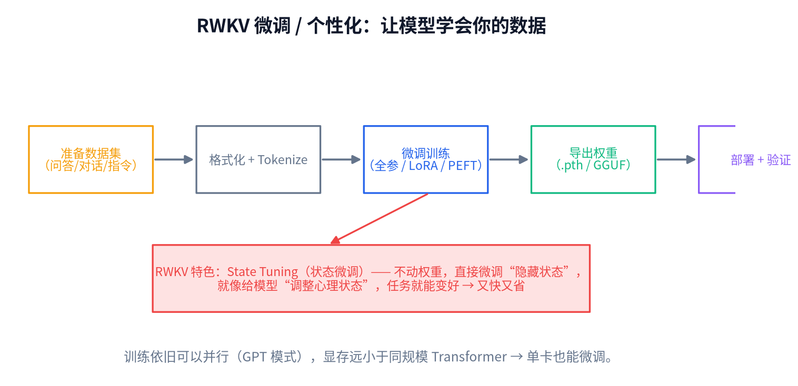
微调效果好不好，80% 取决于数据。RWKV 微调常用的数据格式（JSON Lines，每行一条）：
{"text": "用户：我今天很沮丧。\n小暖：我能感觉到你今天很不好受，愿意和我聊聊发生了什么吗？"}
{"text": "用户：工作被领导批评了。\n小暖：被批评确实会让人难过。你先别急着自责，这次具体是因为什么呢？"}
要点：
| 方式 | 改的权重 | 显存需求 | 适合场景 |
|---|---|---|---|
| 全参微调（Full FT） | 所有参数 | 高 | 数据多、算力足、要彻底改造 |
| LoRA 微调 | 少量低秩矩阵 | 中 | 大多数场景，兼顾效果与成本 |
| State Tuning | 仅隐藏状态 | 低 | 个性化/对齐/角色扮演，又快又省 |
State Tuning（状态微调） 是 RWKV 社区在 v6 迭代中发明的技术：不修改模型权重，只微调"隐藏状态的初始值"。
State Tuning 就是给模型"调整好心情再上场"：通过微调初始状态，让模型在特定任务/角色上表现更好。
微调 = 给模型"换脑子"（改权重，重）；State Tuning = 给模型"调整心理状态"（改初始状态，轻），但都能让它在某类任务上表现更好。
.st 格式的"状态文件"；| 检查项 | 基底模型 | State | 要求 |
|---|---|---|---|
| 架构 | RWKV-6（x060） | x060 | 必须一致 |
| 参数规模 | 7B | 7B | 必须一致 |
| 作用 | 提供完整模型权重 | 提供训练后的状态 | 两者配合使用 |
RAG（Retrieval-Augmented Generation，检索增强生成）解决的是"模型不知道你私有资料"的问题：先从知识库里检索相关资料，再塞给模型生成回答。
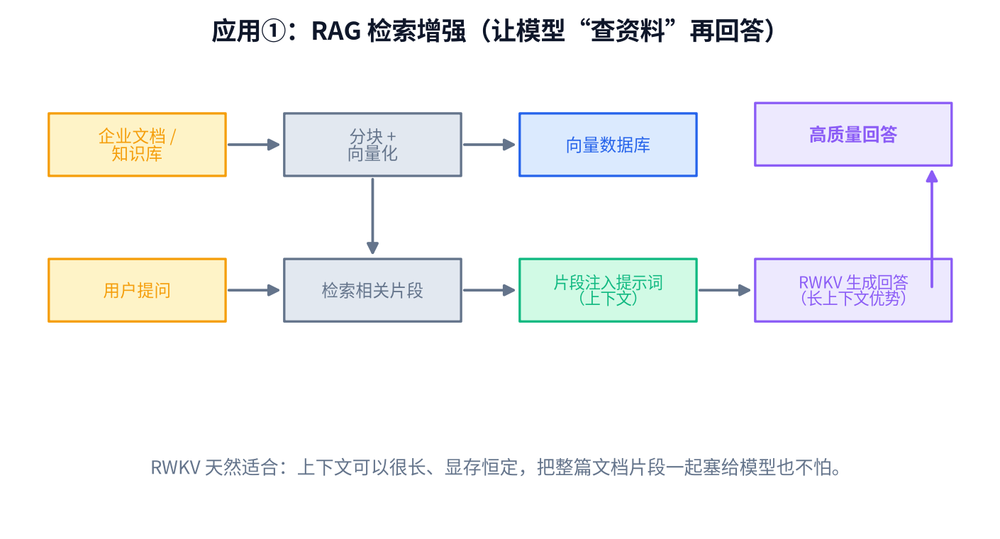
import chromadb
from sentence_transformers import SentenceTransformer
# 1. 准备向量库
client = chromadb.Client()
col = client.get_or_create_collection("kb")
# 2. 文档分块 + 入库（这里用简单的段落切分示意）
docs = ["RWKV 是一种无注意力 RNN 架构。", "RWKV-7 支持动态状态演化。", "..."]
chunks = [d.strip() for d in docs if d.strip()]
col.add(ids=[str(i) for i in range(len(chunks))], documents=chunks)
# 3. 检索 + 生成
def rag_answer(question):
hits = col.query(query_texts=[question], n_results=3)
context = "\n".join(hits["documents"][0])
prompt = f"请根据以下资料回答问题：\n{context}\n\n问题：{question}\n回答："
return chat(prompt) # 复用第十章里的 chat 函数
注意：RWKV-7 的
/v1/embeddings返回的是随模型结构变化的多维状态数组，不能直接当作通用一维文本向量，需要按官方 API 说明处理。
在生产项目中，三者往往组合使用：
这种"基底模型 + 检索 + 轻量微调"的架构，成本最低、效果最好、迭代最快，也是我们第十二章工程套用的主线。
| 坑 | 现象 | 解决办法 |
|---|---|---|
| 数据太少 | 微调后变"复读机" | 数据量至少几百条；或改用 State Tuning |
| 格式不对 | 训练崩/回答乱 | 严格按对话模板格式化 |
| 过拟合 | 只会背训练集 | 加正则、降学习率、增数据多样性 |
| 显存不足 | OOM | 用 LoRA / QLoRA / State Tuning |
| 量化后变笨 | 回复质量下降 | 用 Q8_0 或更高精度微调/推理 |
这是全书的"落地章"。前面讲清了 RWKV 是什么、强在哪，这一章回答最重要的问题：在我们的"AI 陪伴 / 情感智能体"工程里，RWKV 能怎么用？怎么接？ 我们会给出整体架构、模块拆解、以及可直接落地的实现思路。
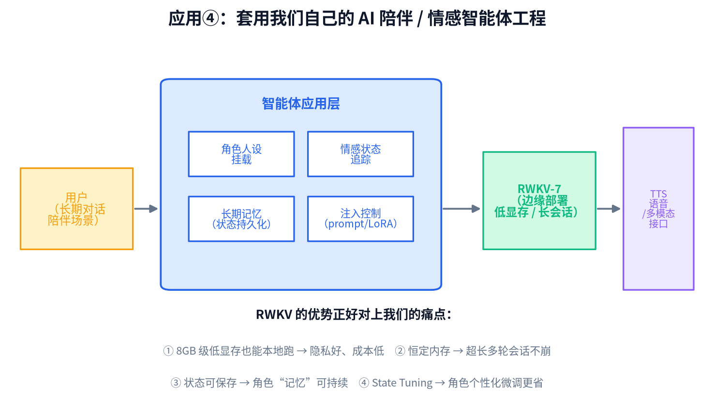
在动手之前，先建立"RWKV 擅长什么"的全局观：
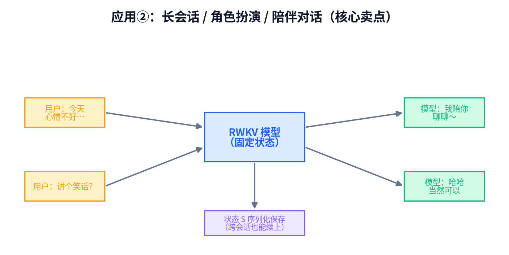
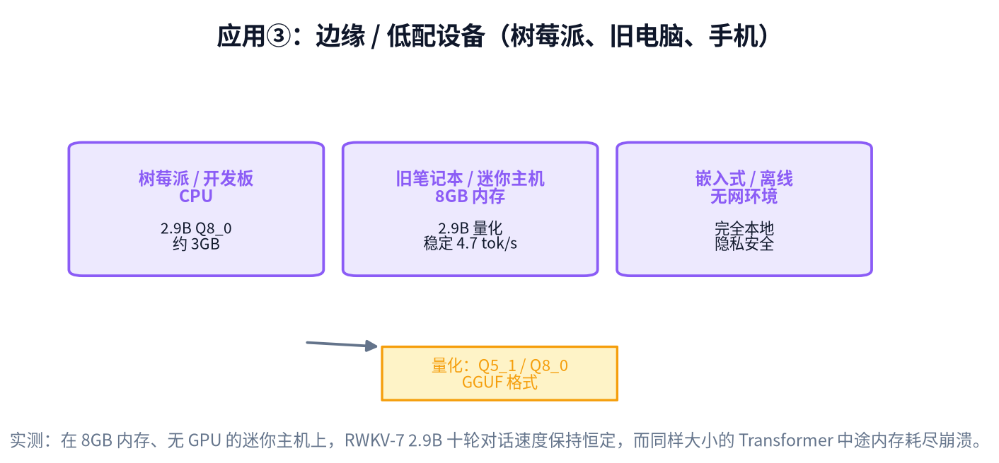
假设我们正在做一个 AI 陪伴 / 情感智能体产品（比如"虚拟朋友、心理陪伴、角色扮演伙伴"）。它有几个非常典型的痛点：
| 痛点 | 具体表现 | Transformer 的困境 | RWKV 的解法 |
|---|---|---|---|
| 长会话成本高 | 用户每天聊几十轮，长期陪伴 | KV Cache 越聊越贵，最终爆内存 | 状态固定，聊多久都便宜 |
| 需要长期记忆 | 记住用户性格、过往、偏好 | 要么全喂历史（贵），要么自建记忆 | 原生状态可持久化，天然"记得" |
| 部署成本敏感 | C 端产品要控制硬件成本 | 显存要求高 | 8GB 都能跑，CPU 可跑 |
| 隐私合规 | 聊天内容敏感 | 上云有合规风险 | 本地/私有化部署更容易 |
| 个性化人设 | 不同用户要不同"性格" | 每个都要微调，贵 | State Tuning，几乎零成本换人设 |
结论：AI 陪伴 / 情感智能体，几乎就是为 RWKV 的优缺点量身定做的场景。
我们把产品拆成"用户层 → 智能体应用层 → 模型层 → 能力层"四层：
| 层级 | 组件 | 作用 |
|---|---|---|
| 用户层 | App / 微信 / 网页 / 语音 | 用户入口 |
| 智能体应用层 | 角色人设挂载、情感状态追踪、长期记忆、注入控制 | 业务逻辑 |
| 模型层 | RWKV-7（本地/边缘部署） | 对话生成核心 |
| 能力层 | TTS 语音、多模态、向量库（RAG） | 扩展能力 |
方式 A：提示词（最快）
SYSTEM = """你叫小暖，是一个温柔耐心的 AI 伙伴。
你的说话风格：简短、温暖、先共情再建议。
你永远记得：用户需要的是被理解，而不是被说教。"""
方式 B：State Tuning（更"入戏"）
.st 状态文件，推理时挂载；工程建议：先用提示词快速验证人设，稳定后转 State Tuning 固化，省成本、效果更好。
让 AI 不只是"会聊天"，还能"察觉情绪"：
EMOTION_PROMPT = """
请分析用户这句话的情绪，只输出一个词：开心/平静/难过/焦虑/愤怒/疲惫。
用户说："{msg}"
"""
def detect_emotion(msg):
r = chat(EMOTION_PROMPT.format(msg=msg))
return r.strip().split()[0] if r else "平静"
# 根据情绪调整回复风格
def respond_with_emotion(user_id, msg):
emo = detect_emotion(msg)
if emo in ("难过", "焦虑", "疲惫"):
sys = "用户现在情绪低落，请先充分共情，语气更温柔，避免说教和玩笑。"
else:
sys = "用户情绪不错，可以更轻松活泼一些。"
return chat_with_system(user_id, sys, msg)
这是 RWKV 相对其他架构的"降维打击"：
# 每个用户一个状态文件 = 一份"专属人生记忆"
def get_memory(user_id):
return load_state(f"memory_{user_id}.pkl")
def remember(user_id, new_state):
save_state(new_state, f"memory_{user_id}.pkl")
# 使用
state = get_memory(user_id)
reply, state = pipeline.generate(prompt, state=state)
remember(user_id, state) # 记忆自动"续上"
对比 Transformer 的做法：Transformer 通常要把全部历史消息重新喂进去（token 成本随记忆长度爆炸），或引入外部向量记忆库做检索；RWKV 直接把"记忆"压缩在状态里，随聊随存，几乎零额外成本。
结合产品阶段：
| 阶段 | 推荐部署 | 理由 |
|---|---|---|
| Demo/原型 | Ollama 或 RWKV-Runner 本地跑 | 最快跑通，验证产品 |
| 内测（少量用户） | llama.cpp / Ollama + OpenAI 兼容 API | 低成本支撑几十个并发 |
| 正式（多用户） | vLLM 服务化 + 状态持久化层 | 高吞吐、可水平扩展 |
| 隐私敏感 | 本地/私有化部署 | 数据不出域，合规 |
注意：RWKV 的"状态"是每个会话独立的一份。多用户产品里，要么用"每会话一个状态"的方式（天然隔离），要么由应用层管理状态 ID 与用户映射——这是工程上需要设计好的点。
| 层 | 选型 |
|---|---|
| 模型 | RWKV-7 G1 2.9B（8GB 机器）或 1.5B（更低配） |
| 推理 | Ollama / llama.cpp / vLLM |
| 状态管理 | 每用户一份 .pkl / 数据库 blob 字段 |
| 对话框架 | 自研几十行 Python，或对接 LangChain |
| 知识库（可选） | Chroma + RWKV 句嵌入 / BGE |
| 语音（可选） | Edge-TTS / 开源 TTS |
| 前端 | 微信/App/Web + WebSocket 流式输出 |
最后一章：把大家最常见的疑问集中解答，给出"到底选不选 RWKV"的决策框架，并附上一份可直接查阅的术语表。到这里，你就从"小白"升级成"能独立判断和动手"的 RWKV 使用/选型者了。
RNN 变体。 RWKV 推理时以循环方式工作（每步只带一份状态），但训练时又能像 Transformer 一样并行。它是"RNN 的身板 + Transformer 的训练效率"，但不含任何自注意力。
不会立刻取代，而是多一种选择。 在长对话、低资源、边缘、私有化场景，RWKV 性价比更高；在极致效果、成熟生态、极致长上下文精确回忆场景，Transformer 仍是主流。两者互补。
推理成本上接近无限（内存/速度不随长度暴涨），但记忆质量有上限——毕竟是压缩摘要，极长时会有信息损失。工程上建议"长上下文 + 分段总结/检索"配合。
都属于"状态空间/线性注意力"家族，但实现不同：Mamba 用连续系统离散化 + 输入相关选择机制；RWKV 用显式可学习衰减（W）+ 感受态门控（R）+ Token Shift，且是 100% 无注意力、全系开源可跑。RWKV 的独特卖点还包括 State Tuning。
免费。 RWKV 模型、代码、内核均为 Apache 2.0 开源，属于 Linux 基金会项目，可自由使用、修改、商用。
RWKV-6/7 的数据相关衰减让并行计算变复杂，官方 WKV 内核能大幅提速。用 RWKV Pip / Albatross / vLLM 等方案会自动利用，建议保持开启。
很好，且是强项。 RWKV-7 在 3B 规模多语言 benchmark 上刷新 SOTA，非英语语言尤其突出；RWKV-6 World 14B 覆盖大量语言。
State Tuning。 不动权重、只调状态，几乎零成本换"性格"，效果甚至比提示词更稳定，还能迁移复用。
| 模型 | 规模 | 特点 |
|---|---|---|
| RWKV-7 G1 | 1.5B / 2.9B | 最新，带思考模式，推荐 |
| RWKV-7 World | 1.5B / 2.9B | 老版 World 系列 |
| RWKV-6 World | 7B / 14B | 多语言，14B 最强 |
| RWKV-6 / v4 系列 | 0.1B–7B | 社区广泛使用 |
用一个"打钩表"帮你快速决策：
| 判断问题 | 是 → 倾向 |
|---|---|
| 场景是长对话/多轮陪伴？ | RWKV |
| 硬件资源有限（低显存/CPU/边缘）？ | RWKV |
| 需要私有化/离线/合规？ | RWKV |
| 要低成本做个性化人设？ | RWKV |
| 需要极致长上下文的精确回忆？ | Transformer |
| 需要最先进效果、算力充足？ | Transformer |
| 需要丰富生态/成熟工具链？ | Transformer |
| 生产高并发服务？ | 两者都可（RWKV 也能 vLLM） |
决策口诀：省、快、私、长会话 → RWKV；准、全、顶、成熟生态 → Transformer。绝大多数"AI 陪伴/情感智能体"属于前者。
| 术语 | 中文/全称 | 一句话解释 |
|---|---|---|
| RWKV | Receptance Weighted Key Value | 无注意力、状态式 RNN 大模型架构 |
| R | Receptance 感受态 | 门控，决定过去信息接受多少 |
| W | Weight 权重衰减 | 可学习的遗忘系数 |
| K / V | Key / Value | 写入记忆的键与值 |
| Time Mixing | 时间混合 | 在时间轴上混合信息，替代注意力 |
| Channel Mixing | 通道混合 | 逐位置特征加工，类似 FFN |
| WKV 算子 | — | RWKV 的线性注意力核心 |
| Token Shift | 词元转移/短卷积 | 混合相邻 token 信息的技巧 |
| 隐藏状态 S | Hidden State | 压缩后的记忆摘要 |
| 双模式 | GPT 模式 / RNN 模式 | 训练并行、推理循环 |
| KV Cache | 键值缓存 | Transformer 的历史缓存 |
| O(N²) / O(N) | 时间复杂度 | 平方 vs 线性增长 |
| State Tuning | 状态微调 | 微调隐藏状态，RWKV 独有 |
| DSE | 动态状态演化 | RWKV-7 的可修正状态机制 |
| TC0 | 复杂度类 | 注意力受限模型的理论复杂度上界 |
| SSM | 状态空间模型 | Mamba 等高效序列模型 |
| RAG | 检索增强生成 | 外挂知识库再回答 |
| LoRA | 低秩适配 | 省显存的微调方法 |
| GGUF | — | llama.cpp 的量化模型格式 |
| .pth | PyTorch 权重 | RWKV 官方权重格式 |
| .st | State 文件 | 状态微调产物，挂载使用 |
| Albatross | — | RWKV-7 的 CUDA/ROCm 推理内核 |
| Apache 2.0 | 开源协议 | 可自由商用 |
如果你只记住一点，请记住这句：
RWKV 是一种"没有自注意力、用固定大小状态记忆一切"的大模型架构——它用"笔记式记忆"换来了 Transformer 的并行训练和 RNN 的恒定成本，在长对话、低资源、个性化、私有化场景里，是把"够聪明 + 够便宜"同时做到的最优解之一。
从第一章到现在，我们已经走完了：它是什么（第1-3章）→ 它特殊在哪（第4-5章）→ 和 Transformer 差在哪（第6章）→ 为什么能行（第7章）→ 怎么用（第8-10章）→ 怎么定制（第11章）→ 怎么落地到我们的项目（第12章）。剩下的，就是动手了。
前面我们一直在说"token"，但可能有些小白还不清楚：AI 读的并不是文字，而是一串数字。 这一章专门补上这块拼图，讲清楚"文本 → token → 向量 → 模型 → 文本"的完整数据流，以及 RWKV 的 tokenizer 有什么特别之处。
计算机里的神经网络只能处理数字，不能直接处理汉字、英文单词。所以我们要先把文字翻译成"模型能懂的数字表示"。这个过程分两步：
模型拿到的是"一串向量"，处理完再反向解码成文字。
Token 是"模型处理文字的最小单位"。它可能是：
| 文本 | 可能的切分方式 |
|---|---|
| 一个汉字"爱" | 1 个 token（中文常按字/词切） |
| "人工智能" | 可能是 1 个 token（整词）或 4 个 token（逐字） |
| "hello" | 可能是 1 个 token |
| "world" | 1 个 token |
| "unbelievable" | 可能切成 "un" + "believ" + "able" 多个 token |
一个通用规律：英文大约 1 个单词 ≈ 1.3 个 token；中文大约 1 个汉字 ≈ 1~2 个 token。 这也解释了为什么"同样字数，中文模型的 token 开销往往更高"。
切好 token 后，每个 token 会通过一张"查找表（embedding 表）"映射成一个固定维度的向量：
小白版：Token 是"字"，Embedding 是"这个字的含义坐标"。相似含义的词，坐标也相近。模型处理的就是这些"含义坐标"。
用"我喜欢吃苹果"这句话举例：
| 步骤 | 发生了什么 | 数据形态 |
|---|---|---|
| 1. 原始文本 | "我喜欢吃苹果" | 字符串 |
| 2. Tokenize | ["我","喜欢","吃","苹果"] | 一串 token id（整数） |
| 3. Embedding | 每个 id 查表得向量 | [4, d] 的矩阵 |
| 4. 模型前向 | 逐层计算，更新状态 S | 隐藏状态 + 输出分布 |
| 5. 采样 | 按概率选下一个 token | 一个 token id |
| 6. Decode | 把 id 查回文字 | 字符串 |
| 7. 循环 | 把新 token 接回输入，继续 | 直到结束 |
RWKV 使用社区自研的 tokenizer（如 rwkv_vocab_v304），并与 rwkv 库绑定使用。要点：
# 用 rwkv 库时，tokenizer 已经内置在 pipeline 里
from rwkv.utils import PIPELINE
pipeline = PIPELINE(model, "rwkv_vocab_v304") # tokenizer 名称
# 看看"文字 → token"长什么样
ids = pipeline.encode("我喜欢吃苹果")
print(ids) # [t1, t2, t3, t4, ...] token 整数序列
# 看看"token → 文字"（解码）
text = pipeline.decode(ids)
print(text) # 我喜欢吃苹果
所有大模型的"上下文长度"（context length）都是用 token 数来衡量的，而不是字数。因为模型真正"看过"的是 token 序列：
# Ollama 里设置上下文长度
/set num_ctx 32768 # 例如把上下文调到 32K token
模型前向计算的最后，会输出一个"下一个 token 的概率分布"——对词汇表里每个 token 都给出一个概率（比如"苹"40%、"火"30%、"鸡"20%……）。然后：
这就是第九章讲的参数（temperature/top_p）发挥作用的地方。
| 问题 | 原因 | 解决 |
|---|---|---|
| 输出全是乱码/问号 | tokenizer 与模型不匹配 | 用配套 tokenizer |
| 英文很好、中文很怪 | tokenizer 中文覆盖率低 | 换多语言 tokenizer / World 模型 |
| 生成的文字超长不停止 | 没设 max_tokens 或没触发 EOS | 设置 max_tokens、增加停止词 |
| 输入被截断 | 超过上下文长度 | 调大 num_ctx，或分段处理 |
"部署 + 使用"讲完了，这一章回答一个更底层的问题：RWKV 是怎么被训练出来的？ 理解了训练原理，你就明白为什么"双模式"如此巧妙，也知道了以后想自己训练/微调时该做什么。
大语言模型的训练目标朴素得惊人：给定前面的文字，预测下一个词。 这叫"自监督学习"——不需要人工标注，互联网上的海量文本本身就是"答案"。
这个任务叫 next-token prediction（下一个词预测），是所有 GPT 系模型（包括 RWKV）的基础。
回忆第五章：RWKV 同一套权重有"GPT 模式（并行）"和"RNN 模式（循环）"两种跑法。训练时用 GPT 模式，推理时用 RNN 模式：
| 训练（GPT 模式） | 推理（RNN 模式） | |
|---|---|---|
| 处理方式 | 整段序列一次摊开并行算 | 一个 token 一个 token 串行走 |
| 计算对象 | 一次算出所有位置的输出 | 每步只算当前 token 的输出 |
| 状态处理 | 用"前缀和"技巧一次性模拟 | 显式维护一个状态 S |
| 为什么能 | WKV 可分解（衰减与输入无关时可并行） | 状态式 RNN 天然支持 |
核心洞察：训练时的"并行"不需要真的一个个更新状态——因为 WKV 的衰减结构可以写成前缀和（cumulative sum），整条时间轴一次性并行算出。这就是"RNN 居然能并行训练"的秘密。
训练时，模型每个位置都会输出一个预测分布，我们要让它和"真实的下一个词"尽量一致：
小白版：模型猜错了 → 告诉它"正确答案是啥" → 它调整自己的参数，下次更接近 → 反复几万亿次，就变聪明了。
Transformer 训练时要保存大量中间激活（每层、每个 token 的注意力分数等）用于反向传播；RWKV 因为状态式结构，中间量更少，训练/微调的显存占用明显更低。这让你"单卡微调"成为可能。
长序列训练对 Transformer 是噩梦（显存随长度平方涨，需要各种分片技巧）；RWKV 是线性，训练长上下文更省。
v6/v7 引入了"数据相关衰减"后，WKV 不能再简单写成前缀和，并行实现变复杂。官方提供专用 CUDA 内核（WKV kernel）高效实现，训练和推理都应尽量开启。
# RWKV-LM 训练脚本里，用 --cuda_on 或 strategy 开启官方内核
# 例如用 RWKV-LM 的 train.py：
# python train.py --load_model ... --wandb ... --ctx_len 4096 ...
| 阶段 | 做什么 | 数据 | 目的 |
|---|---|---|---|
| 预训练（Pretrain） | 从零学语言规律和世界知识 | 海量网页/书籍（万亿 token） | 让模型"会说话、懂知识" |
| 指令微调（SFT） | 学会"听指令回答问题" | 人工编写的问答数据 | 让模型"能对话、会干活" |
| 对齐（RLHF 等） | 让回答更符合人类偏好 | 人类反馈打分 | 让模型"更友善、更有用" |
RWKV 的开源模型（如 RWKV-6 World、RWKV-7 G1）都已完成了这三个阶段，开箱即用。我们自己动手时，通常做的是指令微调或State Tuning（见第十一章）。
| 方式 | 数据量 | 算力 | 时间成本 | 适合谁 |
|---|---|---|---|---|
| 从零预训练 | 万亿级 token | 大量 GPU 集群 | 极高 | 大厂/研究机构 |
| 继续预训练 | 百亿级 token | 多卡 | 高 | 特定领域（医疗/法律） |
| 全参微调 | 百万级 | 单卡/多卡 | 中 | 有数据的团队 |
| LoRA 微调 | 万级 | 单卡 | 低 | 大多数开发者 |
| State Tuning | 千级 | 单卡 | 极低 | 个性化/人设 |
对绝大多数人：不要从零训练，用开源的 RWKV + 轻量微调/State Tuning 就够了。
以 RWKV-LM 仓库的训练脚本为例，理解训练入口大概长什么样（不必真跑）：
# 克隆官方训练库
git clone https://github.com/BlinkDL/RWKV-LM
cd RWKV-LM/RWKV-v7
# 单卡微调示意（具体参数以官方 README 为准）
python train.py \
--load_model path/to/base.pth \
--wandb off \
--data_file path/to/my_data.txt \
--ctx_len 1024 \
--micro_bsz 4 \
--epoch_steps 100 \
--lr_init 1e-5 \
--accumulate_grad_batches 4
要点：
--load_model：加载基底模型（续训）；--data_file：你的训练数据（纯文本即可做继续预训练；做指令微调通常用 JSONL）；--ctx_len：序列长度；--lr_init：学习率（微调要调小，如 1e-5，避免破坏原模型）；micro_bsz 或 ctx_len。更友好的微调路径：用 RWKV-PEFT（支持 LoRA 与 State Tuning，脚本开箱即用），或直接用我们第十一章的方法。
无论预训练还是微调，数据质量都决定效果：
| 原则 | 说明 |
|---|---|
| 去重去噪 | 去掉重复、乱码、低质内容 |
| 多样 | 覆盖各种领域、风格、语言 |
| 干净格式 | 统一换行、编码（UTF-8） |
| 任务对齐 | 微调数据要和"上线场景"一致 |
黄金法则：与其堆 100 万条低质数据，不如用 1 万条高质量、贴合场景的数据。
RWKV 已经很"省"了，但还能更省。这一章讲清楚量化是什么、怎么选，以及各种提速/省内存的实用技巧，让你在有限的硬件上发挥 RWKV 的最大威力。
模型权重默认用 32 位浮点数（FP32）或 16 位（FP16）存储，占用空间大。量化就是把这些"大数"用更小的精度表示，从而显著减少内存、加快速度。
| 精度 | 每参数比特 | 7B 模型体积（约） | 效果 |
|---|---|---|---|
| FP32 | 32 bit | 28 GB | 最准，最贵 |
| FP16 | 16 bit | 14 GB | 精度无损，常用 |
| INT8（Q8_0） | 8 bit | 7 GB | 精度损失小，强烈推荐 |
| INT4（Q4_K_M 等） | 4 bit | 4 GB | 更省，质量略降 |
| NF4 / Q3 | 3-4 bit | 3 GB | 极致省，质量下降明显 |
RWKV 的量化建议：社区实测推荐
FP16或Q8_0档。更低的 Q5/Q4 虽能大幅省内存，但会明显降低回复质量——"够用"和"好用"之间要权衡。
| 格式 | 说明 | 适用 |
|---|---|---|
| GGUF | llama.cpp 生态的量化格式 | llama.cpp / Ollama |
| GPTQ | 面向 GPU 的量化 | vLLM 等 GPU 推理 |
| AWQ | 面向 GPU 的量化 | 激活感知量化 |
| fp16i8 | RWKV Pip 的混合精度 | 官方推理 |
这是最重要的一条。RWKV-6/7 的数据相关衰减需要专用 CUDA/ROCm 内核才能高效并行：
cuda fp16，显存不足用 cuda fp16i8；很多"RWKV 很慢"的反馈，都是因为没开官方内核、在 CPU 上裸跑导致的。
| 硬件 | 推荐模型 |
|---|---|
| 4GB 内存 | RWKV-7 1.5B（Q8） |
| 8GB 内存 | RWKV-7 2.9B（Q8） |
| 8GB 显存 | RWKV-7 2.9B fp16 / 7B 量化 |
| 24GB 显存 | 7B fp16 / 14B 量化 |
先小后大：先用跑得动的最小模型验证，再逐步升级。
虽然 RWKV 长上下文"免费"，但过长会消耗更多预填充时间。按需设置：
# Ollama
/set num_ctx 8192
# llama-server
./llama-server -m model.gguf --ctx-size 8192
# vLLM
--max-model-len 8192
生成是逐 token 的，流式输出（Streaming）让用户边生成边看，体感速度快很多（见第十章）。
生产场景用 vLLM 的 continuous batching（连续批处理），把多个请求拼在一起算，GPU 利用率大幅提升，吞吐翻数倍。
| 技巧 | 做法 | 效果 |
|---|---|---|
| 量化模型 | 用 Q8/Q5 GGUF | 体积减半以上 |
| 关闭思考模式 | 用 thinkdisabled 版本模型 |
更快、省内存 |
| 限制上下文 | 调小 num_ctx | 减少状态开销 |
| CPU 多线程 | llama.cpp 设置 -t 线程数 |
CPU 更快 |
| 内存回收 | 关闭其他占用内存的程序 | 给模型更多空间 |
# llama.cpp 用多线程跑
./llama-cli -m model.Q8_0.gguf -t 8 -c 4096
# Ollama 设置 CPU 线程
OLLAMA_NUM_PARALLEL=1 ollama serve
| 指标 | Transformer 7B | RWKV-7 2.9B |
|---|---|---|
| 模型体积（Q8） | 约 8GB | 约 3GB |
| 长对话稳定性 | 越聊越慢，可能 OOM | 恒定 |
| 8GB 无 GPU 机器 | 基本跑不动 | 稳定 4-5 tok/s |
| 单卡部署 | 显存吃紧 | 轻松 |
# 1. 监控显存/内存
nvidia-smi -l 1 # GPU 显存实时
free -h # 内存
# 2. llama.cpp 自带压测
./llama-bench -m model.gguf -p 512 -n 128
# 3. 简单计时
time curl http://localhost:11434/api/chat -d '{...}'
需要关注三个指标：
| 现象 | 原因 | 解决 |
|---|---|---|
| 生成很慢 | 没开官方内核 / CPU 跑大模型 | 开内核、换小模型 |
| 显存不足 | 模型太大或上下文太长 | 量化、调小 ctx、换小模型 |
| 首次回答特别久 | 长上下文预填充 | 缩短输入、分段 |
| 多用户一慢全慢 | 没做批量 | 用 vLLM continuous batching |
| 输出质量下降 | 量化档太低 | 用 Q8_0 / FP16 |
很多教程一上来就甩公式，小白直接劝退。这一章反着来：只讲公式背后的直觉，把 RWKV 的核心数学用"买菜、记账、做笔记"的比喻讲清楚。你不需要会推导，只需要"看懂它想干什么"。
记住"点积 = 相似度打分"，RWKV 的数学就通了一半。
| 字母 | 数学角色 | 生活直觉 | 通俗公式 |
|---|---|---|---|
| R | 感受态（门控系数） | "这条信息我接受多少" | R 乘在最终结果上 |
| W | 衰减系数 | "记忆忘得多快" | 越旧乘越小的系数 |
| K | 键 | "这条信息叫什么名字" | 用于"对号入座" |
| V | 值 | "这条信息的实际内容" | 真正被记住的内容 |
RWKV-4 的经典 WKV 公式（不背，只看结构）：
output_t = R_t · ( Σ_{i<t} exp(-w·(t-i)) · (K_i · V_i) + exp(u)·(K_t · V_t) )
拆成三句话：
K_i · V_i（写入）：每个历史词把"名字 × 内容"记进状态——就像记账时写下"日期 × 金额"；exp(-w·(t-i))（衰减）：越早的账目乘的衰减系数越小——就像老账目被时间冲淡；R_t（读出/门控）：当前这个词决定"这段记忆对我重不重要"——就像翻账本时只挑有关的看。一句话：WKV = 把历史"按新旧打折后求和"，再乘一个"要不要管它"的开关。
exp(-w·(t-i)) 让旧信息平滑地、按比例地变淡，但不会瞬间归零——远亲也能沾点光；这正是 RWKV "不健忘"的秘密：把"遗忘"从玄学变成可调的旋钮。
Shift(x[t]) = μ · x[t] + (1 - μ) · x[t-1]
为什么叫"短卷积"：它等价于一个核长 2 的卷积，几乎零成本，却能显著提升表现——RWKV 的"以小博大"典型例子。
out = sigmoid(R) ⊙ ( W2 · gelu(W1 · K) ) ⊙ V
逐块拆解：
| 符号 | 含义 | 直觉 |
|---|---|---|
W1 · K |
线性变换 | 把输入换个"视角"看 |
gelu(...) |
非线性激活 | 引入非线性，增强表达 |
W2 · ... |
再变换 | 加工后回到原维度 |
sigmoid(R) |
门控 | 决定"这些特征要不要激活" |
⊙ |
逐元素相乘 | 逐位把关 |
一句话：Channel Mixing 就是在"同一个时刻"上，把特征加工得更丰富，再按需放行——作用类似 Transformer 的 FFN。
RWKV-7 的状态更新比 v4 复杂，但直觉更简单——会改错：
旧版（v4）： S = 衰减 · S + K·V # 只能写，不能改
新版（v7）： S = S · 门控 + 基于误差的修正 # 能写，还能改
用"做笔记"比喻：
这正是论文里说的"元上下文学习器"：模型在每个 token 上，用"上下文里的梯度下降"自我调整状态。
O(N²) vs O(N)
N=4K：1600万 vs 4000
N=32K：10亿 vs 3.2万
这就是"长上下文不心疼"的全部秘密——少算了一个 N 的配对。
| 公式/术语 | 数学形式 | 生活直觉 |
|---|---|---|
| 点积 K·V | Σ K_i·V_i | 记下"名字×内容" |
| 指数衰减 | exp(-w·(t-i)) | 老账按比例冲淡 |
| 感受态 R | sigmoid(R) | 开关：要不要管它 |
| Token Shift | μ·x[t]+(1-μ)·x[t-1] | 瞥一眼上一句 |
| 归一化分母 | /Σ exp(-w·(t-i)) | 让账本总和不发散 |
| Delta 规则（v7） | S←S·D+误差修正 | 记错了就改 |
| 前缀和并行 | cumsum | 摊开来一次算完 |
RWKV 并不孤单。在"用状态代替注意力"这条路上，还有 Mamba、RetNet、Gated DeltaNet 等一批高效架构。这一章帮你建立全局观：它们各自怎么"省"、差异在哪、RWKV 的位置和优势是什么。
Transformer 的 O(N²) 是行业痛点，于是出现了一整条研究路线：用"固定大小的状态/记忆"替代"两两配对的注意力"，把复杂度降到 O(N) 甚至 O(1)。这些架构统称"线性注意力 / 状态空间 / 高效序列模型"。
| 架构 | 记忆机制 | 复杂度 | 训练并行 | 推理成本 | 代表模型 |
|---|---|---|---|---|---|
| Transformer | 自注意力 + KV Cache | O(N²) | 完全并行 | 随上下文增长 | GPT/Llama/Qwen |
| Mamba | SSM 状态 + 选择机制 | O(N) | 并行扫描 | 常数 | Mamba-1/2 |
| RetNet | 线性注意力 + 显式衰减 | O(N) | 并行 | 常数 | RetNet |
| Gated DeltaNet | Delta 规则状态 | O(N) | 并行 | 常数 | 研究/小规模 |
| RWKV | R/W/K/V 状态 | O(N) | 并行 | 常数 | RWKV-4~7 |
和同族相比，RWKV 有几个"别人没有"的特点：
| 特点 | 说明 |
|---|---|
| 100% 无注意力 | 架构里完全没有 self-attention（有些混合模型仍保留稀疏注意力） |
| 全系开源可商用 | 0.1B–7.2B 模型、代码、内核均 Apache 2.0，Linux 基金会项目 |
| State Tuning | 可微调隐藏状态，个性化/对齐又快又省，是 RNN 系独有能力 |
| 状态可持久化 | 状态 S 可直接序列化保存/恢复，天然支持跨会话记忆 |
| 多语言强 | RWKV-7 在 3B 多语言任务上刷新 SOTA |
| 生态可直接用 | Ollama/llama.cpp/vLLM/RWKV-Runner 均已支持，开箱即用 |
不是。 虽然都属于"线性注意力/状态"家族，但机制不同：Mamba 来自 SSM（连续系统离散化），RWKV 来自 RNN + 显式衰减 + Token Shift。RWKV 强调"R/W/K/V 四件套 + 可学衰减"，Mamba 强调"选择性扫描"。
分任务。 在标准 benchmark 上，头部高效架构（含 RWKV-7）已能与同规模 Transformer 打平甚至超过；在"状态追踪"等特定推理任务上，RWKV-7 理论上还能超过注意力受限的模型。真正有差距的是"超大模型规模下的极致效果"和"生态成熟度"。
旧版确实有，但已改善。 RWKV-7 的动态状态演化让状态可修正，大幅缓解了记忆"只进不出"的问题；不过对"逐字精确回忆"仍弱于完整注意力，因此出现了 RWKV-X 等"状态 + 稀疏注意力"的混合方案。
最近的一个方向是混合架构：以状态记忆为主干，在关键位置混入少量稀疏注意力，兼顾"便宜"和"精确回忆"：
判断：纯 RNN 派（RWKV）、SSM 派（Mamba）、混合派（RWKV-X / 各类 linear-attention hybrid）会长期共存，各取所长。
| 你的情况 | 建议 |
|---|---|
| 要现成可用、全系开源、中文好、能商用 | RWKV（生态成熟、开箱即用） |
| 只研究架构、喜欢 SSM 理论 | Mamba |
| 追求极致长序列（超长文档） | Mamba / 混合架构（扫描式更适合极长序列） |
| 要做 AI 陪伴/长会话 + 个性化 | RWKV（State Tuning + 状态持久化是独门优势） |
| 要最新效果、算力充足 | 头部 Transformer |
RWKV 不只是文本模型。这一章看看它的多模态能力、最新实验方向（v8、混合架构），以及"未来 RWKV 会往哪走"，帮你判断要不要长期押注它。
官方与社区已在多个模态方向推进 RWKV：
| 模态 | 形态 | 说明 |
|---|---|---|
| 文本 | 语言模型（LLM） | 成熟，v1–v7 全系 |
| 语音 | 音频输入/输出 | 官方支持多模态方向，社区有语音模型 |
| 图像 | 视觉理解（VLM） | RWKV 已发布视觉语言模型（RWKV-VL） |
| 跨模态 | 统一状态建模 | RNN 状态天然适合流式多模态 |
为什么 RNN 适合多模态：RWKV 的状态式处理是"流式"的（来一段处理一段），对语音、视频这类实时流式信号特别友好——不用等整段输入完再处理。这是它在多模态上的天然优势。
截至 2026 年，RWKV-8 仍在实验阶段，公开了几个值得关注的方向：
一个越来越明显的趋势："状态记忆为主 + 必要处稀疏注意力"的混合架构。
输入 → [状态记忆层 ×N] → [稀疏注意力层（少量）] → 输出
（便宜，管长程摘要） （贵，管精确回忆）
判断：未来的 RWKV 大概率不是"纯 RNN"，而是"以状态为主、混合稀疏注意力"的进化版——既保留便宜，又补强精确。
| 方向 | 进展 |
|---|---|
| 推理框架 | Ollama / llama.cpp / vLLM / RWKV-Runner / Albatross 全面支持 |
| 微调工具 | RWKV-LM / RWKV-PEFT（LoRA、State Tuning） |
| 应用生态 | RAG、Agent、多模态、嵌入式应用不断涌现 |
| 基金会 | Linux 基金会 AI 项目，治理更规范 |
| 社区 | 中英文社区活跃，中文教程完善（rwkv.cn） |
任何技术选型都要看到"风险"：
| 风险 | 对策 |
|---|---|
| 生态比 Transformer 小 | 关注官方与社区进展；核心推理已标准化 |
| 模型规模上限偏低（目前到 14B 级别） | 用在"中低资源/边缘/长会话"优势场景 |
| 极致精确回忆弱 | 用混合架构 / RAG / 分段总结补强 |
| 版本迭代快，API 有变动 | 锁定版本，跟随官方文档迁移 |
总体判断：RWKV 作为"高效长会话 + 低资源部署 + 低成本个性化"的主力选手，至少在 AI 陪伴、边缘智能、私有化部署这几个赛道上，有长期价值。
光看不练等于白学。这一章给你 12 个由浅入深的动手任务，从"跑起第一个模型"到"做一个带长期记忆的 AI 陪伴机器人"。每个任务都给出目标、步骤和验收标准，做完这套练习，你就真正"会" RWKV 了。
curl -fsSL https://ollama.com/install.sh | sh
ollama run mollysama/rwkv-7-g1:2.9b
ollama create 后运行；/api/chat；stream=True 逐块打印；rwkv 库对话，把 state 存成 .pkl，重启进程后恢复再聊；detect_emotion + 按情绪调整回复 + 状态持久化；| 章节 | 对应练习 |
|---|---|
| 第八章 部署 | 任务 1、4 |
| 第九章 推理/API | 任务 2、3、5、6、7、8 |
| 第十章 Python | 任务 8、9 |
| 第十一章 微调/RAG | 任务 11 |
| 第十二章 工程套用 | 任务 10、12 |
"模型强不强"一半看模型，一半看你怎么问。这一章专门讲 RWKV 的提示词（Prompt）工程技巧——从基础结构到 RWKV 的专属玩法，让你花最小的成本，把模型效果榨到最好。
一个完整、有效的提示词通常包含：
| 要素 | 作用 | 示例 |
|---|---|---|
| 角色（Role） | 设定身份与立场 | "你是一名温柔的心理咨询师" |
| 任务（Task） | 明确要干什么 | "请概括这段文字" |
| 约束（Constraints） | 限定格式/风格/边界 | "用 100 字以内，分三点" |
| 示例（Examples） | 给一个标准答案样板 | "例如：……" |
黄金结构：
角色 + 任务 + 约束 + 示例。四件套齐全，输出质量明显上升。
RWKV 这类模型对"角色"非常敏感。同一个问题，加不加角色，效果天差地别：
✗ 差：解释一下什么是焦虑。
✓ 好：你是一位有 10 年经验的心理咨询师。请用温柔、通俗的语言，向一位 20 岁的年轻人解释什么是焦虑，并给出 3 条缓解建议。
角色越具体，输出越"入戏"、越稳定。这对我们后面做 AI 陪伴（第十二章）尤其重要。
想让输出变成 JSON、列表、表格，直接说清楚：
请分析下面这段话的情绪，只输出 JSON：
{"emotion": "<开心/平静/难过/焦虑/愤怒/疲惫>", "confidence": <0~1>}
文本：今天工作被领导骂了，好烦。
输出：
{"emotion": "焦虑", "confidence": 0.85}
技巧：明确给出"输出格式模板"，比只说"结构化输出"有效得多。
给模型 1-3 个"输入 → 输出"示例，它就能模仿你的格式和风格：
把口语转成书面语：
口语：那啥，明儿咱们去逛个街呗？
书面语：明天我们一起去逛街，好吗？
口语：这事儿我觉得吧，其实也没啥大不了的。
书面语：我认为这件事其实并不严重。
口语：你等会儿，我马上来。
书面语：
模型会自动顺着你的"例子风格"继续，产出高度一致。
RWKV 有状态记忆，多轮对话时不需要把历史再抄一遍。系统提示词里放"长期人设"，每轮只放"本轮增量"：
# 系统提示词（只设一次）
你是小暖，温柔耐心的 AI 伙伴。你记得用户的喜好和过往。
# 每轮只传当前消息（状态自动带着记忆）
用户：我今天有点难过……
这比 Transformer 的"每轮把整段历史重发"更省、更自然。
如果提示词太长（占大量 token），或者人设总是不稳定，就该上 State Tuning 了：把人设"训练进状态"，提示词就可以大大缩短，甚至只留一句"你是小暖"。
RWKV-7 G1 默认带思考模式（/set think / /set nothink）：
陪伴类对话里模型容易重复，除了调 repetition_penalty，提示词里也可以写：
请避免重复用词和句式，不要复读之前说过的话。
| 误区 | 表现 | 改正 |
|---|---|---|
| 提示词太短 | 输出泛泛而谈 | 补上角色 + 约束 + 示例 |
| 要求太多 | 顾此失彼 | 一次只聚焦 1-2 个要求 |
| 措辞模糊 | 输出跑偏 | 用"具体"代替"大概" |
| 提示词超长 | 占上下文、易被稀释 | 精简，或转 State Tuning |
| 忘记约束输出格式 | 解析困难 | 给出明确格式模板 |
你是一个友好、专业的中文 AI 助手。请直接、简洁地回答问题，不要啰嗦。
问题：{问题}
请把下面这段文字概括为 {N} 个要点，每个要点不超过 {M} 字，用编号列表输出：
{文本}
你是 {角色名}，性格 {性格描述}。说话风格：{风格}。
规则：先共情，再回应；不要长篇大论说教。
用户说：{消息}
从下面文本中抽取 {字段列表}，输出 JSON：
{文本}
提示词工程是"低成本迭代"：不用重新训练，几行字就能显著提升效果。先把它做到极致，再考虑微调/State Tuning。
看别人怎么把 RWKV 用起来，是最快的学习方式。这一章盘点 RWKV 在真实世界的典型用法——从代码补全到智能客服，从陪伴机器人到边缘设备，帮你打开"我还能拿它做什么"的思路。
社区有人基于 RWKV 做了一个 VS Code 代码补全插件（rwkv-code-completion）：
rwkv_lightning（HTTP API）；启示：RWKV 的"低资源本地推理"特性，特别适合 IDE 这类"要快、要隐私、要常驻"的场景。
用 RAG 方案（第十一章）给企业做"私有知识库问答"：
这是 RWKV 最"量身定做"的场景（也是我们第十二章的重点）：
在树莓派、旧笔记本、无网环境跑 RWKV：
利用 RWKV 的"长上下文免费"优势：
RWKV-6 World 14B 覆盖大量语言，且多语言效果好：
观察上面所有案例，共同点是：
| 共同点 | 说明 |
|---|---|
| 本地/私有化 | 数据不出域、合规、离线 |
| 长会话/长文档 | 恒定内存、长上下文免费 |
| 成本敏感 | 低显存、CPU 可跑、免 API 费 |
| 实时/常驻 | 稳定延迟、状态可续 |
| 个性化 | State Tuning 低成本定制 |
反过来说：如果你的场景是"云端高并发 + 要最先进效果 + 不在乎成本"，RWKV 未必是首选；但凡是"省、私、长、稳、个性"，RWKV 都值得认真考虑。
想判断"我的想法能不能用 RWKV 做"，套这个自查表：
勾中 2 条以上，RWKV 就值得试试。
RWKV 不是一个人在战斗。这一章带你认识它背后的"江湖"——社区在哪、有哪些核心项目、模型生态长什么样，以及如果你想参与贡献，该从哪里下手。
判断一个开源模型值不值得长期投入，除了看架构本身，还要看生态是否活跃。RWKV 在这点上相当有底气：它是中国第一个达到 GPT 级性能的开源语言模型，也是 Linux 基金会（AI & Data 基金会）旗下的首个生成式 AI 托管项目，背后有全球范围的开发者协作。
| 社区阵地 | 说明 | 适合谁 |
|---|---|---|
| GitHub（RWKV-LM） | 源码、模型、v1–v8 各版本、训练代码 | 开发者、研究者 |
| Discord（RWKV 官方） | 全球开发者实时讨论、内核优化、新版本内测 | 深度用户、贡献者 |
| rwkv.cn 中文社区 | 中文教程、RWKV-Runner、部署指南、问答 | 中文用户、小白 |
| Hugging Face | 各版本模型权重、GGUF 量化、微调产物 | 使用者、部署者 |
| 官方 Wiki | 架构史、部署教程、论文解读 | 想深入原理的人 |
一句话建议：刚上手就去 rwkv.cn 找教程 + RWKV-Runner 一键跑通；想深入就在 GitHub 和 Discord 泡着；想找现成模型/量化文件就去 Hugging Face。
RWKV 生态不是只有一个仓库，而是一整套工具链。认识它们，你就知道遇到问题时该找谁：
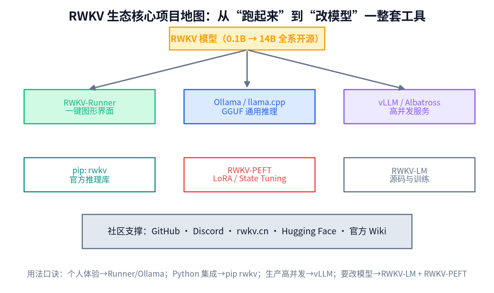
| 项目 | 定位 | 一句话作用 |
|---|---|---|
| RWKV-LM | 主仓库 | 模型定义、训练/推理代码、官方权重发布 |
| RWKV-Runner | 图形界面 | 一键下载/运行/聊天/微调，Windows/Mac 小白神器 |
| RWKV-PEFT | 微调工具 | LoRA 微调、State Tuning（状态微调） |
| Albatross | 推理内核 | RWKV-7 的 CUDA / ROCm 高性能内核，显著提速 |
| rwkv（pip） | 官方推理库 | Python 里加载/推理 RWKV 的推荐方式 |
| rwkv_tokenizer | 分词库 | RWKV 专用 tokenizer（世界模型分词） |
| RWKV pip / vLLM | 服务框架 | 高并发 OpenAI 兼容 API 服务 |
| Ollama / llama.cpp | 通用推理 | 通过 GGUF 格式跑 RWKV，最省心 |
怎么选：个人体验 → RWKV-Runner 或 Ollama；Python 集成 →
pip install rwkv；生产高并发 → vLLM / Albatross；要改模型 → RWKV-LM + RWKV-PEFT。
RWKV 生态的模型非常"全"：从 0.1B 到 14B 全系开源，且都带 Apache 2.0 商用许可。按发布时间和使用热度，大致可以分成几代：
| 系列 | 代表模型 | 特点 | 适合场景 |
|---|---|---|---|
| RWKV-4 | 1.5B / 3B / 7B | 经典版，稳定，社区资料多 | 学习、轻量部署 |
| RWKV-5 / 6 | World 0.1B–14B | 多语言强化，14B 最强 | 中文/多语言、生产 |
| RWKV-7 G1 | 1.5B / 2.9B | 最新，带思考模式，DSE 状态机制 | 推荐首选、长对话 |
| RWKV-7 World | 1.5B / 2.9B | 多语言版 | 多语言需求 |
| RWKV-X | 实验混合架构 | 结合线性注意力的最新尝试 | 尝鲜、研究 |
获取模型的三种途径：
# 方式一：Ollama 直接拉（最省心）
ollama run mollysama/rwkv-7-g1:2.9b
# 方式二：Hugging Face（含 GGUF 量化）
huggingface-cli download BlinkDL/rwkv-7-g1-2.9B-0.1B-preview \
rwkv-7-g1-2.9B-0.1B-preview-GGUF-Q4_K_M.gguf --local-dir ./rwkv
# 方式三：RWKV-Runner 图形界面内一键下载
好的问题 = 一半的答案。社区里高效求助的姿势是这样的：
模型版本 + 框架（Ollama/llama.cpp/pip）+ 硬件（显存/内存）+ 报错全文。参与开源不只是"写代码"。RWKV 社区几乎每个人都能找到适合自己的贡献方式：
| 贡献方式 | 难度 | 你能得到什么 |
|---|---|---|
| 反馈 bug、提 Feature 建议 | ★ | 社区信誉、问题被修 |
| 写/翻译中文教程、Wiki | ★ | 帮助新人、个人品牌 |
| 提供量化模型（GGUF/INT8） | ★★ | 部署者感谢、下载量 |
| 测试新版（RWKV-7/8 内测） | ★★ | 第一时间体验、反馈价值 |
| 为 vLLM / llama.cpp 修 bug | ★★★ | 开发者认可、合入主仓库 |
| 训练/微调开源模型 | ★★★ | 影响力、研究产出 |
| 优化内核（Albatross） | ★★★★ | 极高认可度（需要 CUDA 功底） |
入门路线：先在本地跑通一个模型 → 写一篇使用笔记发到 rwkv.cn → 尝试给 Wiki 补一节教程 → 提交一个文档 PR。从小事做起，慢慢就会找到自己感兴趣的方向。
想跟上 RWKV 的最新进展，盯住这几类信号即可：
前面我们学会了"跑起来"，这一章解决"跑得稳、跑得便宜、跑得专业"。无论你是给公司做私有化助手，还是把自己的 AI 陪伴应用上线，这章的工程实践清单都值得照抄。
本地 ollama run 和真实产品之间，隔着一整套"工程问题"。先看清差距，再对症下药：
| 维度 | Demo（本地玩） | 生产（上线产品） |
|---|---|---|
| 并发 | 1 个用户 | 几十上百并发 |
| 稳定性 | 崩了重开 | 需要监控、告警、自动恢复 |
| 成本 | 无所谓 | 必须核算 token 成本 / 硬件成本 |
| 安全 | 无要求 | 内容过滤、隐私合规、防注入 |
| 质量 | 聊天就行 | 需要评测、回退、A/B |
| 记忆 | 手动存状态 | 状态库、多用户隔离、持久化 |
核心思路：RWKV 最大的工程红利是"状态（State）"。Transformer 产品要缓存一整套 KV 历史才能续聊，RWKV 只需要持久化一份固定大小的状态文件——这会让你的存储和续聊逻辑简单一个数量级。
根据你的 QPS（每秒请求数）和预算，有三种典型的服务形态：
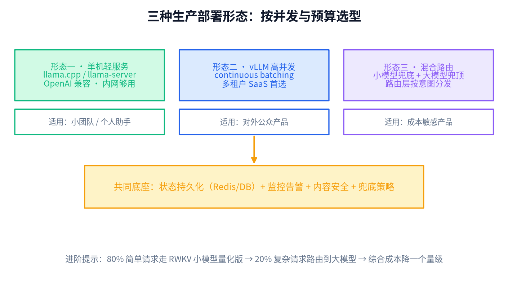
形态一：单机轻服务（个人/小团队）
# 用 llama.cpp 起一个 OpenAI 兼容服务，几十个用户够用
./llama-server -m rwkv-7-g1-2.9B-Q4_K_M.gguf --port 8080 \
--ctx-size 8192 --n-gpu-layers 99
形态二：vLLM 高并发服务（对外产品）
pip install vllm
python -m vllm.entrypoints.openai.api_server \
--model /path/to/rwkv-7 \
--port 8000 --max-model-len 8192
形态三：混合架构（大模型 + 小模型/规则）
这是 RWKV 相对 Transformer 最独特、最值得利用的工程点。核心模式是"状态即身份"：
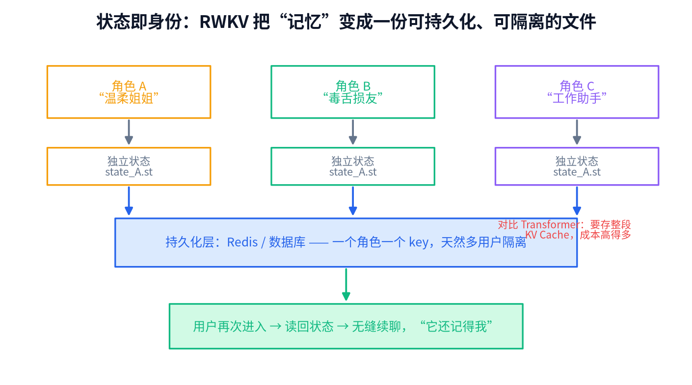
from rwkv.model import RWKV
from rwkv.utils import PIPELINE
model = RWKV(model="/path/rwkv-7.pth", strategy="cuda fp16")
pipe = PIPELINE(model, "rwkv_vocab_v20230424")
def new_session(role_id):
"""每个角色/用户一个独立状态"""
return {"role": role_id, "state": None, "history": []}
def chat(sess, text):
out, sess["state"] = model.run([text], sess["state"]) # 传旧状态、收新状态
sess["history"].append(text)
return out
生产落地的三个要点：
state 序列化存进 Redis / 数据库，用户下次进来直接读回，实现"跨会话不失忆"——而 Transformer 想做同样的事，要存整段 KV Cache，代价大得多。为什么这对你的产品重要：AI 陪伴/情感智能体的核心卖点就是"它记得我"。用 RWKV，这个记忆是"一等公民"（一份文件的事），实现成本远低于 Transformer 路线。
按"投入产出比"排序，从最划算的开始：
| 手段 | 效果 | 成本 |
|---|---|---|
| 量化（Q4_K_M / Q8_0） | 显存降 4–8 倍，速度提升 | 零成本，精度略降 |
| 选对模型规模 | 2.9B 换 7B，速度翻倍以上 | 视需求 |
| 开启 Albatross / 官方内核 | RWKV-7 提速明显 | 零成本 |
| vLLM 连续批处理 | 吞吐提升数倍 | 需要 GPU 服务 |
| 前缀/状态缓存 | 多轮请求避免重复计算 | 需自己实现 |
| 批处理 + 异步 | 客户端体验更稳 | 需要工程改造 |
| 小模型兜底路由 | 综合成本大幅下降 | 需要路由逻辑 |
量化速查（以 2.9B 为例，大致值）：
| 精度 | 显存占用 | 备注 |
|---|---|---|
| fp16 | 约 6GB | 质量最好 |
| INT8 / Q8_0 | 约 3GB | 质量几乎无损 |
| Q4_K_M | 约 1.8GB | 性价比之王 |
| Q4_K_S | 约 1.6GB | 更小，质量略降 |
上线前请建立三条防线：
① 评测集：准备 50–100 条覆盖你业务场景的"黄金问题"，每次改模型/改参数后跑一遍，对比输出质量。别凭感觉上线。
② 监控指标： - 延迟（首 token 延迟、平均 token/秒）； - 错误率（超时、空回复、报错）； - 成本（每日 token 消耗、GPU 利用率）； - 业务指标（对话轮数、留存、好评率）。
③ 兜底策略： - 超时自动重试一次； - 空回复/报错时返回预设话术； - 检测到敏感内容时走安全话术； - 大模型挂了自动降级到小模型。
| 风险 | 应对 |
|---|---|
| 提示词注入 | 严格角色设定 + 系统提示词隔离 + 输入过滤 |
| 有害内容 | 输出侧内容审核（关键词 + 分类器） |
| 隐私数据 | 模型私有化部署、日志脱敏、加密存储状态 |
| 版权/合规 | 确认 Apache 2.0 商用条款、注明生成内容 |
| 幻觉 | 关键事实类场景加 RAG 检索约束 |
[ ] 模型与量化选型（规模 / 精度 / 显存）定稿
[ ] 推理服务（llama.cpp / vLLM）本地压测通过
[ ] 状态持久化 + 多用户隔离实现
[ ] OpenAI 兼容 API 对接业务后端
[ ] 评测集跑通，质量达标
[ ] 监控 + 告警 + 兜底策略上线
[ ] 内容安全过滤接入
[ ] 压测：并发、长对话稳定性、内存是否恒定
[ ] 成本核算：单次会话 token 成本 × 用户量
[ ] 灰度发布（先 10% 用户）→ 观察 → 全量
最后一章，我们从"现在"看向"以后"：RWKV 下一步往哪走？这个方向的终点是什么？以及——如果你想从"会用"进阶到"懂原理、能研究"，该按什么路线走。
RWKV 的演进有一条清晰的脉络：每次迭代都在解决"状态的表达能力"问题。
| 版本 | 状态机制 | 解决的核心问题 |
|---|---|---|
| v1–v4 | 固定衰减（W 不可随输入变化） | 证明"无注意力也能训练出模型" |
| v5/v6 | 数据相关衰减（W 随输入变化） | 让遗忘系数"懂上下文" |
| v7（Goose） | DSE 动态状态演化（可修正的线性注意力） | 状态能"纠错"，逼近 Transformer 记忆精度 |
| v8+ | 实验阶段，探索更强的状态表达 | 进一步缩小与全注意力的差距 |
趋势判断（基于公开信息）：
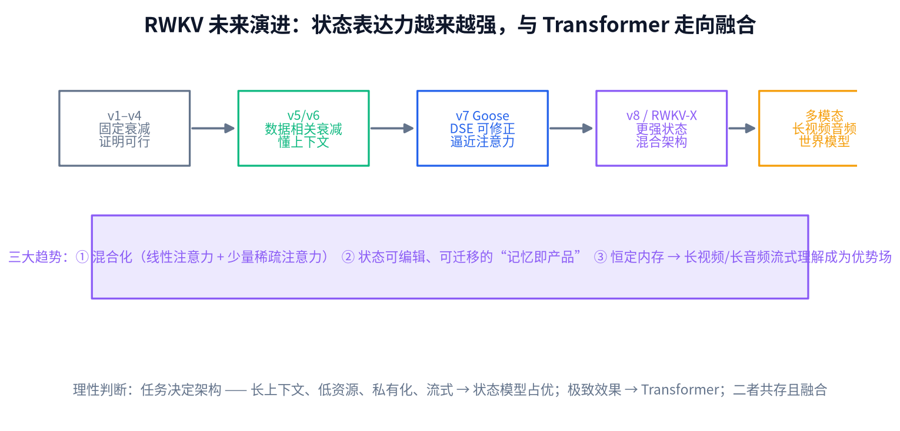
给你一副冷静的眼镜，别被任何一方带节奏：
| 论点 | 正（看好 RWKV 方向） | 反（谨慎） |
|---|---|---|
| 长上下文 | 恒定内存，成本可控 | 精确回忆仍不如全注意力 |
| 效率 | O(N) 天生优势 | 硬件针对 Transformer 优化更多 |
| 生态 | 全系开源、Apache 2.0 | 工具链、生态规模小于 Transformer |
| 科研 | 理论清晰（TC0 类） | 头部算力仍倾斜 Transformer |
理性的结论：不是"谁取代谁"，而是任务决定架构——需要极长上下文、低资源、私有化、个性化、流式处理的任务，RWKV 这类线性注意力/状态模型会越来越有竞争力；需要极致效果和成熟生态的任务，Transformer 继续占主导。两者共存，且越来越融合，这才是最可能的中期图景。
如果你对 RWKV 产生了"想搞懂"的冲动，这是一条由浅入深的路：
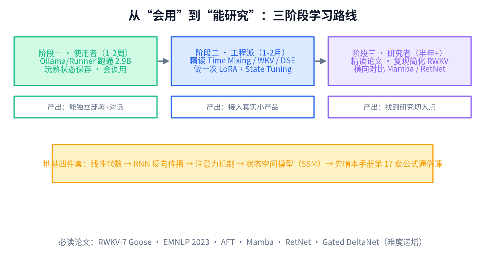
第一阶段：使用者（1–2 周） - 用 Ollama / RWKV-Runner 跑通 2.9B，玩熟状态保存； - 读完本手册第 1–12 章，能独立部署 + 写 Python 调用； - 完成第 20 章 12 个实战任务。
第二阶段：工程派（1–2 个月） - 精读第 5、6、7 章，理解 Time Mixing / WKV / DSE 的直觉； - 用 RWKV-PEFT 做一次 LoRA 微调和 State Tuning； - 把 RWKV 接进一个真实小产品，跑通第 24 章的上线清单。
第三阶段：研究者（半年+） - 精读 RWKV 论文 + 关键参考文献（见下方书单）； - 复现一个简化版 RWKV（在 colab 上从零训练小模型）； - 读 Mamba、RetNet、Gated DeltaNet 论文，横向对比； - 关注 RWKV-8 / RWKV-X 的公开实验，找可改进的切入点。
进阶必读论文清单：
| 论文 | 为什么读 |
|---|---|
| RWKV-7 "Goose"（2025） | 理解最新的 DSE 状态机制 |
| EMNLP 2023 RWKV 论文 | 权威的架构说明与评测 |
| Attention Free Transformer（AFT） | RWKV 的灵感来源，理解 Token Shift 由来 |
| Mamba（2023） | 状态空间模型的代表，横向对比必备 |
| RetNet（2023） | 另一条线性注意力路线 |
| Gated DeltaNet | 和 RWKV-7 最接近的"邻居" |
想真正读进论文，你需要补这几块"地基"，顺序建议如下：
TimeMix、ChannelMix 层。最快的捷径：把本手册第 17 章（公式通俗课）先啃下来，它已经把 RWKV 的公式翻译成了人话；有了直觉，再去看论文里的数学符号，就不会被劝退。
| 你是谁 | 你该怎么用 RWKV |
|---|---|
| 产品经理 | 用它验证"长对话 + 记忆 + 私有化"的产品假设，成本极低 |
| 后端工程师 | 重点研究第 24 章状态管理，这是你相对 Transformer 路线的差异化优势 |
| 算法工程师 | 读第 25.3 书单，RWKV 的论文量和复杂度远低于重读全套 Transformer |
| 学生 | 用它入门"高效序列模型"，这是一个学术空白很多、好发力的方向 |
| 创业团队 | 用全系开源模型快速搭 MVP，省掉大笔 API 费用 |
| 普通用户 | 用 RWKV-Runner 把它变成你的本地 AI 助手，数据不出电脑 |
我们从"一句话看懂 RWKV"一路走到了"未来展望"。回顾这一趟，你其实已经掌握了一套理解一切大模型架构的通用框架：
任何序列模型，本质上都在回答三个问题：怎么记（记忆机制）、怎么算（并行性）、怎么省（成本）。 RNN 用状态记、串行算；Transformer 用注意力记、平方算；RWKV 用"聪明的状态"记、线性算。看懂了这个坐标，你就不再是"只会用"的人，而是能判断和选择的人。
RWKV 的故事还在继续（RWKV-8、RWKV-X、多模态、世界模型都在路上）。本手册写完的这一刻，可能正是某些新进展开始的前一刻。希望你带着这份"看得懂、跑得动、改得了"的能力，去亲手验证它——毕竟，最好的学习方式，永远是运行一行代码，而不是背诵一段定义。
《RWKV 架构详解 · 从入门到落地 · 超全图文手册》完。感谢阅读，动手去跑一个 RWKV 吧！
前面 25 章把理论和单项技能都讲完了，这一章把它们串成完整项目。我们从零到一，搭建一个"有角色、有记忆、能翻知识库"的 RWKV 陪伴助手。你跟着敲，最后会得到一个真正能跑起来的小产品。
我们要做的项目叫 "Memo 伙伴"：一个带长期记忆的 AI 聊天助手。核心需求三条：
整体架构非常轻——不需要大集群，一台电脑就能跑：
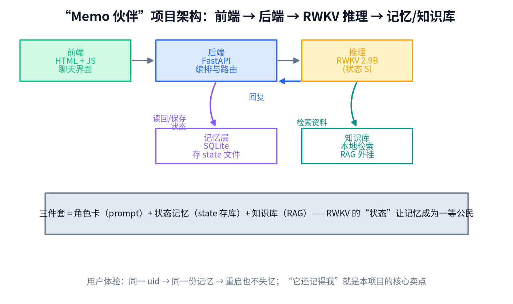
| 模块 | 技术 | 作用 |
|---|---|---|
| 前端 | 原生 HTML + JS | 聊天界面 |
| 后端 | Python + FastAPI | 接收请求、编排逻辑 |
| 推理 | RWKV（rwkv pip 库） | 生成回复 |
| 记忆 | SQLite（存状态文件） | 跨会话持久化记忆 |
| 知识库 | 简单向量检索（可选） | RAG 外挂资料 |
关键点：RWKV 的"状态文件"在这里就是记忆的物理载体——我们把状态存进数据库，用户回来时读出来接着用，这就是它相对 Transformer 的工程红利。
# 1. 安装 Python 依赖
pip install rwkv rwkv_tokenizer fastapi uvicorn
# 2. 下载模型（2.9B 为例，约 6GB fp16；显存不够就下 GGUF 量化）
# 从 Hugging Face 拉取 RWKV-7 权重（或通过 RWKV-Runner 下载）
huggingface-cli download BlinkDL/rwkv-7-g1-2.9B-0.1B-preview \
--local-dir ./models/rwkv-7
# 3. 准备好 vocab 文件（RWKV 分词器）
# 通常与模型同目录：rwkv_vocab_v20230424.txt
写一个最基础的 llm.py，把模型封装成"说一句话 → 返回回复"的接口：
# llm.py —— RWKV 推理封装
from rwkv.model import RWKV
from rwkv.utils import PIPELINE
MODEL_PATH = "./models/rwkv-7/rwkv-7.pth"
VOCAB_PATH = "./models/rwkv-7/rwkv_vocab_v20230424.txt"
# strategy: "cuda fp16" 用显卡；"cpu fp32" 没显卡也能跑
model = RWKV(model=MODEL_PATH, strategy="cuda fp16 * -> cuda fp16")
pipe = PIPELINE(model, VOCAB_PATH)
def generate(prompt: str, state=None, temperature=0.8):
"""返回 (回复文本, 新状态)"""
# RWKV 官方库：把整段 prompt 一次性灌入，得到输出和最终状态
out, state = model.run([prompt], state)
return out, state
if __name__ == "__main__":
text, st = generate("你好，我是谁？")
print("助手:", text)
注意：官方
rwkv库的model.run输入通常是"token 序列"。不同版本 API 略有差异，请以你安装版本的 README 为准；核心逻辑不变——每次调用都传回上一次的 state，实现连续记忆。
角色不是一个"开关"，而是写进每一轮输入开头的"身份卡"。我们把角色设定做成可配置：
# prompt.py —— 角色与对话模板
ROLE_CARD = """你叫 Memo，是一个温柔、耐心的倾听型 AI 朋友。
你说话简短、口语化，经常关心对方的感受。
如果对方提到难过的事，先共情，再给建议。
你永远使用简体中文回复。"""
def build_prompt(user_input: str, history: list[str]) -> str:
"""history 是最近几轮的短记忆，状态文件管长记忆"""
chat = "\n".join(history[-6:]) # 只保留最近 6 条，防爆 token
return f"{ROLE_CARD}\n\n最近的对话：\n{chat}\n用户：{user_input}\nMemo："
为什么这样设计：RWKV 的"状态"负责长期记忆（跨会话、记大事）；显式塞进 prompt 的 history 负责短期上下文（让回复更连贯）。两者分工，这是 RWKV 应用最舒服的用法。
这是本项目最 RWKV 的部分——状态即记忆，存进数据库：
# memory.py —— 用 SQLite 存状态，实现跨会话记忆
import sqlite3, pickle
DB = "memo.db"
def _conn():
c = sqlite3.connect(DB)
c.execute("CREATE TABLE IF NOT EXISTS sessions "
"(uid TEXT PRIMARY KEY, state BLOB, history TEXT)")
return c
def save_session(uid: str, state, history: list[str]):
c = _conn()
c.execute("INSERT OR REPLACE INTO sessions VALUES (?,?,?)",
(uid, pickle.dumps(state), "\n".join(history)))
c.commit(); c.close()
def load_session(uid: str):
c = _conn()
row = c.execute("SELECT state, history FROM sessions WHERE uid=?", (uid,)).fetchone()
c.close()
if not row:
return None, []
return pickle.loads(row[0]), row[1].split("\n")
工作原理：用户每说一句话，我们拿到新的 state，立刻存库。下次用户再来，直接读回 state——RWKV 就"还记得"之前的所有对话。整个过程不需要存任何原始长文本，一个状态文件搞定。
# app.py —— FastAPI 聊天接口
from fastapi import FastAPI
from pydantic import BaseModel
from llm import generate
from prompt import build_prompt
from memory import load_session, save_session
app = FastAPI()
class ChatIn(BaseModel):
uid: str
text: str
@app.post("/chat")
def chat(body: ChatIn):
state, history = load_session(body.uid) # 1. 读回记忆
prompt = build_prompt(body.text, history) # 2. 组 prompt
reply, new_state = generate(prompt, state) # 3. 生成回复
save_session(body.uid, new_state, history + [body.text, reply]) # 4. 存记忆
return {"reply": reply}
# 启动：uvicorn app:app --port 8000
用原生 HTML 就能做得很像样，不需要框架：
<!-- index.html -->
<!DOCTYPE html>
<html lang="zh">
<head>
<meta charset="utf-8">
<title>Memo 伙伴</title>
<style>
body { font-family: sans-serif; max-width: 640px; margin: 0 auto; padding: 16px; }
#box { border: 1px solid #ddd; height: 60vh; overflow-y: auto; padding: 12px; border-radius: 8px; }
.me { background: #dbeafe; padding: 6px 10px; border-radius: 8px; margin: 6px 0; text-align: right; }
.ai { background: #f1f5f9; padding: 6px 10px; border-radius: 8px; margin: 6px 0; }
input { width: 80%; padding: 8px; }
</style>
</head>
<body>
<h2>Memo 伙伴 <small>（带记忆的 RWKV 助手）</small></h2>
<div id="box"></div>
<br>
<input id="inp" placeholder="和 Memo 说点什么...">
<button onclick="send()">发送</button>
<script>
const UID = "user-001"; // 同一 UID = 同一份记忆
async function send() {
const inp = document.getElementById("inp");
const box = document.getElementById("box");
const text = inp.value; if (!text) return; inp.value = "";
box.innerHTML += `<div class="me">${text}</div>`;
const res = await fetch("/chat", {
method: "POST",
headers: {"Content-Type": "application/json"},
body: JSON.stringify({uid: UID, text}),
});
const data = await res.json();
box.innerHTML += `<div class="ai">${data.reply}</div>`;
box.scrollTop = box.scrollHeight;
}
</script>
</body>
</html>
启动后在浏览器打开 http://localhost:8000/index.html，就能和"带记忆的 Memo"聊天了。
想让 Memo 能回答你资料里的问题？给它加一个"外挂知识库"：
# rag.py —— 极简 RAG：关键词 + 向量混合检索
# 这里用最朴素的实现演示思想；生产可换 FAISS / Chroma / Milvus
import hashlib, sqlite3
def add_doc(text: str):
"""把一段资料按句切分后入库"""
for sentence in text.replace("\n", "。").split("。"):
if len(sentence.strip()) > 10:
conn = sqlite3.connect("kb.db")
conn.execute("CREATE TABLE IF NOT EXISTS docs "
"(id TEXT PRIMARY KEY, content TEXT)")
h = hashlib.md5(sentence.encode()).hexdigest()
conn.execute("INSERT OR REPLACE INTO docs VALUES (?,?)", (h, sentence))
conn.commit(); conn.close()
def search(query: str, topk: int = 3) -> str:
"""按关键词命中程度检索最相关的句子"""
conn = sqlite3.connect("kb.db")
rows = conn.execute("SELECT content FROM docs").fetchall()
conn.close()
q = set(query)
scored = sorted(rows, key=lambda r: -len(q & set(r[0])))
return "\n".join(c for c, *_ in scored[:topk])
然后改一下 build_prompt，把检索结果作为"参考资料"喂给模型：
def build_prompt(user_input, history):
ref = search(user_input) # 知识库检索结果
return (f"{ROLE_CARD}\n\n参考资料：\n{ref}\n"
f"（资料若无用请忽略）\n\n最近的对话：\n{history[-6:]}\n"
f"用户：{user_input}\nMemo：")
效果：现在 Memo 既能"记住你"（状态），又能"查资料"（RAG），还"有人设"（角色卡）。一个三合一的小助手就完成了。
本地演示（够用了）：
uvicorn app:app --host 0.0.0.0 --port 8000
对外上线（参考第 24 章）： 1. 换 vLLM 托管推理，提升并发； 2. 数据库从 SQLite 升级到 PostgreSQL/Redis； 3. 加内容安全过滤和监控告警； 4. 用 Docker 打包，一键部署。
常见的三个坑及解法：
| 坑 | 现象 | 解法 |
|---|---|---|
| 状态序列化失败 | 重启后记忆丢失 | 确认用 pickle 且版本一致；或改存为 JSON 数组格式 |
| 显存不足 | 启动报 CUDA OOM | 换 strategy="cuda fp16" 或下载 Q4 量化版 |
| 回复重复/复读机 | 一直说同样的话 | 调高 temperature、打开重复惩罚 |
做完这个项目，回头看你其实已经用上了 RWKV 最有价值的几个特性：
| 用到的能力 | 对应章节 | 在本项目中的体现 |
|---|---|---|
| 恒定内存推理 | 第 4、5 章 | 单机就能跑，无需大显存 |
| 状态即记忆 | 第 10 章 | SQLite 存状态 → 跨会话不失忆 |
| 双模式 | 第 7 章 | 开发时并行、推理时线性，无需 KV Cache |
| State 可迁移 | 第 11 章 | 换模型/换设备，记忆仍可复用 |
| RAG 外挂 | 第 11 章 | 知识库检索 + 状态记忆并行 |
动手过程中，报错是常态，别慌。这一章把 RWKV 从部署到运行最常见的报错整理成"症状 → 原因 → 解法"的速查手册。遇到问题先来这里翻，能省下大量瞎折腾的时间。
在逐条查错之前，先记住一套"通用排查四步法"——它能解决八成问题：
Traceback / Error 之后的正文）。别只看开头。rwkv / torch / llama.cpp / ollama 版本不匹配是高频元凶，先统一版本。通用环境诊断命令：
python -c "import torch; print(torch.__version__, torch.cuda.is_available())"
ollama list && ollama --version
nvidia-smi # 看显存是否够
free -h # 看内存是否够
| 症状 | 常见原因 | 解法 |
|---|---|---|
pip install rwkv 报编译错误 |
缺编译工具 / 版本过旧 | pip install --upgrade pip setuptools wheel，再装 C++ 编译器 |
| 模型下载极慢或失败 | 国内网络访问 Hugging Face 慢 | export HF_ENDPOINT=https://hf-mirror.com 走国内镜像 |
ModuleNotFoundError: rwkv |
装错环境 / 未激活虚拟环境 | 检查 which python，在 venv 里重新 pip install |
AttributeError: ... has no attribute ... |
库版本太老 | pip install -U rwkv rwkv_tokenizer 升级到最新 |
加载 .pth 报 unexpected key |
模型文件不完整/损坏 | 重新 huggingface-cli download，校验文件大小 |
镜像加速示例：
export HF_ENDPOINT=https://hf-mirror.com
pip install rwkv -i https://pypi.tuna.tsinghua.edu.cn/simple
| 症状 | 常见原因 | 解法 |
|---|---|---|
CUDA out of memory |
模型太大 / 上下文太长 / 并发太多 | 换量化版、缩短上下文、strategy="cuda fp16"、加 --n-gpu-layers 分层 |
CPU 跑 MemoryError |
内存不够加载 fp16 | 下载 GGUF Q4/Q8 量化，用 llama.cpp 跑 |
| 加载即崩、进程被杀 | OOM 被系统 Kill | 用 Q4_K_M 量化版，先测 free -h |
| 显存占用随对话暴涨 | 用了非 RWKV 方案 / 上下文没限制 | RWKV 显存应恒定；检查是否误开了长上下文或缓存 |
给 2.9B 模型的显存速查（约）：
| 精度 | 显存 | 说明 |
|---|---|---|
| fp16 | ~6GB | 质量最好 |
| Q8_0 / INT8 | ~3GB | 推荐平衡点 |
| Q4_K_M | ~1.8GB | 低显存首选 |
| 症状 | 常见原因 | 解法 |
|---|---|---|
| 回复"复读机" / 一直重复 | temperature 过低、无重复惩罚 | temperature=0.9 + 开启重复惩罚 / presence_penalty |
| 中文乱码 / 输出怪字 | 用了错误 vocab 文件 | 用模型自带的 vocab（如 rwkv_vocab_v20230424.txt） |
| 回复过于简短/废话 | 模型偏小 + prompt 引导不足 | 调高 top_p、给更明确的指令、换更大模型 |
| 回答内容瞎编（幻觉） | 所有 LLM 通病 | 关键事实走 RAG 检索约束 |
| 长对话后半段变笨 | 状态被挤压 / 上下文太长 | 分段总结、定期压缩状态、用 RAG 分担 |
采样参数速调口诀：要稳 → 低 temperature（0.2–0.5）；要创意 → 高 temperature（0.8–1.1）；要不重复 → 打开重复惩罚；要准确 → 配 RAG。
| 症状 | 常见原因 | 解法 |
|---|---|---|
Address already in use |
端口被占用 | 换端口：--port 8081；或 lsof -i:11434 找占用进程 |
Connection refused |
服务没启动 / 地址写错 | 确认服务在跑、host 与端口一致；跨机器用 --host 0.0.0.0 |
| 前端请求被 CORS 拦截 | 浏览器跨域限制 | 后端加 CORS 中间件，允许你的前端域名 |
| API 返回 401 / 无响应 | 未带鉴权 / 模型名错误 | 检查 Authorization 头与 model 参数拼写 |
vLLM 启动报 model not found |
路径/格式不对 | vLLM 需要 HF 目录结构或 Safetensors，确认格式 |
Ollama 常见问题速查：
ollama ps # 看当前加载的模型和显存
ollama rm <model> # 清理不要的模型
ollama run xxx --verbose # 看耗时与 token 速度
| 症状 | 常见原因 | 解法 |
|---|---|---|
LoRA 微调 OOM |
batch 太大 / 序列太长 | 减小 batch_size、micro_bsz、ctx_len，或用 QLoRA |
加载 .st 状态报维度不匹配 |
模型版本/规模不一致 | 状态文件和模型必须同版本同规模，重新导出 |
| 微调后变傻 / 灾难性遗忘 | 学习率太高 / 步数过多 | 降学习率（如 1e-5）、用 LoRA 而非全参、加正则 |
| 状态文件读取为空 | 序列化/路径问题 | 检查 pickle 文件完整性，确认读的是同一路径 |
State Tuning 的黄金法则：状态文件是"记忆快照"，换模型权重前先导出 .st；它只负责"性格/记忆"，不负责"知识"——知识靠权重或 RAG。
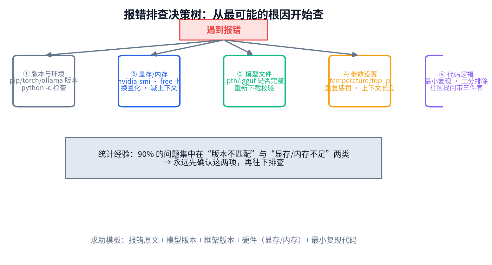
排查优先级从高到低：环境与版本 → 显存/内存 → 模型文件完整性 → 参数设置 → 代码逻辑。90% 的问题都集中在"版本不匹配"和"显存不够"这两类上，先确认它们再深挖。
| 资料 | 地址 / 说明 |
|---|---|
| RWKV-LM 官方仓库 | github.com/BlinkDL/RWKV-LM（源码、模型、v1–v8 各版本） |
| RWKV 官网 | rwkv.com |
| 中文社区 | rwkv.cn（教程、RWKV-Runner、中文文档） |
| 官方 Wiki | wiki.rwkv.com（架构史、Ollama/llama.cpp 等部署教程） |
| RWKV-7 论文 | 《RWKV-7 "Goose" with Expressive Dynamic State Evolution》（2025-03） |
| EMNLP 2023 论文 | RWKV-4 相关论文（首个正式收录） |
| AFT 论文 | Attention Free Transformer（Apple，RWKV 的启发来源之一） |
| RWKV-PEFT | github.com/JL-er/RWKV-PEFT（微调与 State Tuning 工具） |
| RWKV Runner | rwkv.cn 提供的一键图形界面工具 |
| Ollama RWKV 模型库 | ollama.com/mollysama/rwkv-7-g1 等 |
# 第 1 步：安装 Ollama（Linux 为例）
curl -fsSL https://ollama.com/install.sh | sh
# 第 2 步：拉取并运行 RWKV-7
ollama run mollysama/rwkv-7-g1:2.9b
# 第 3 步（可选）：用 API 调用
curl http://localhost:11434/api/chat -d '{"model":"mollysama/rwkv-7-g1:2.9b","messages":[{"role":"user","content":"你好"}],"stream":false}'
| 命令 | 作用 |
|---|---|
ollama run <model> |
运行模型并进入对话 |
ollama pull <model> |
下载模型 |
ollama list |
查看已下载模型 |
ollama create my-model -f Modelfile |
用 Modelfile 创建自定义模型 |
ollama serve |
启动 API 服务（默认 11434） |
ollama rm <model> |
删除模型 |
| 命令 | 作用 |
|---|---|
./llama-cli -m model.gguf -p "你好" |
命令行交互 |
./llama-server -m model.gguf --port 8080 |
启动 OpenAI 兼容服务 |
./llama-bench -m model.gguf |
性能测试 |
| 命令 | 作用 |
|---|---|
pip install vllm |
安装 |
python -m vllm.entrypoints.openai.api_server --model ... --port 8000 |
启动服务 |
| 命令 | 作用 |
|---|---|
huggingface-cli download <repo> <file> --local-dir <dir> |
下载模型 |
export HF_ENDPOINT=https://hf-mirror.com |
切换国内镜像 |
pip install rwkv rwkv_tokenizer |
安装官方推理库 |
# HuggingFace 镜像（国内加速）
export HF_ENDPOINT=https://hf-mirror.com
# 关闭 HuggingFace 的联网检查（离线环境）
export HF_HUB_OFFLINE=1
# 指定模型缓存目录
export HF_HOME=/path/to/hf_cache
| 目的 | 章节 |
|---|---|
| 30 秒搞懂 RWKV | 第一章 |
| 补 RNN/Transformer 基础 | 第二章 |
| 名字/定义/出身 | 第三章 |
| 十大卖点 | 第四章 |
| 架构内部原理 | 第五章 |
| 与 Transformer 全面对比 | 第六章 |
| 版本历史与为什么有效 | 第七章 |
| 部署与环境准备 | 第八章 |
| 命令行/API/调参 | 第九章 |
| Python 实战（含状态管理） | 第十章 |
| 微调 / State Tuning / RAG | 第十一章 |
| 套用到我们的 AI 陪伴工程 | 第十二章 |
| FAQ / 选型 / 术语表 | 第十三章 |
想精准定位某个知识点？这份全章节速览表让你"按图索骥"：
| 章节 | 主题 | 一句话内容 |
|---|---|---|
| 第 1 章 | 一句话看懂 RWKV | 30 秒入门：RWKV 是什么、能做什么 |
| 第 2 章 | RNN 与 Transformer 基础 | 看懂两大前辈，理解 RWKV 的出发点 |
| 第 3 章 | RWKV 到底是什么 | 名字含义、定义、出身与家族定位 |
| 第 4 章 | 特殊之处十大卖点 | RWKV 凭什么特殊，一次性讲透 |
| 第 5 章 | 架构拆解 | Time Mixing / Channel Mixing / WKV 内部原理 |
| 第 6 章 | 与 Transformer 全面对比 | 机制、复杂度、内存、效果的逐项对照 |
| 第 7 章 | 版本进化与原理 | v1→v8 演进史，以及"为什么有效" |
| 第 8 章 | 部署方案与环境准备 | Ollama / Runner / llama.cpp / vLLM 选型 |
| 第 9 章 | 推理实战与 API | 命令行、API、采样参数调优 |
| 第 10 章 | Python 代码实战 | 状态管理、多轮对话完整代码 |
| 第 11 章 | 微调与 RAG | LoRA / State Tuning / 知识库接入 |
| 第 12 章 | 应用场景与工程套用 | 如何套用到你的 AI 陪伴工程 |
| 第 13 章 | FAQ 与术语表 | 常见疑问、选型决策、术语速查 |
| 第 14 章 | Tokenizer 与数据流 | 分词、嵌入与 token 全流程 |
| 第 15 章 | 训练原理 | 训练目标、双模式训练、微调 |
| 第 16 章 | 量化与性能优化 | INT8 / Q4 量化与推理加速 |
| 第 17 章 | 公式通俗课 | 用大白话解释 RWKV 的数学 |
| 第 18 章 | 高效架构家族对比 | Mamba / RetNet / Gated DeltaNet 横向对比 |
| 第 19 章 | 多模态与未来方向 | 视觉音频、RWKV-8 路线图 |
| 第 20 章 | 实战练习手册 | 12 个从部署到 RAG 的动手任务 |
| 第 21 章 | 提示词工程实战 | 面向 RWKV 的 Prompt 技巧与角色设定 |
| 第 22 章 | 真实案例巡礼 | 别人都在用 RWKV 做什么 |
| 第 23 章 | 社区生态与资源 | 社区在哪、有哪些项目、如何参与 |
| 第 24 章 | 落地实战（生产部署） | 并发、状态管理、监控、安全、上线清单 |
| 第 25 章 | 未来展望与学习路线 | 演进趋势、论文书单、三阶段进阶路线 |
| 第 26 章 | 端到端项目实战 | 从零搭一个"带记忆"的 AI 助手全流程 |
| 第 27 章 | 常见报错与排查手册 | 部署/显存/推理/API/微调报错速查 |
| 附录 A | 资料与命令速查 | 官方资料、命令、环境变量、速览表 |
RWKV 架构详解 · 从入门到落地 · 超全图文手册 —— 完